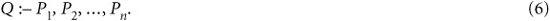

Evaluate the condition before executing the triggering event.
Evaluate the condition before executing the triggering event.
As the use of database systems has grown, users have demanded additional functionality from these software packages, with the purpose of making it easier to implement more advanced and complex user applications. Object-oriented databases and object-relational systems do provide features that allow users to extend their systems by specifying additional abstract data types for each application. However, it is quite useful to identify certain common features for some of these advanced applications and to create models that can represent them. Additionally, specialized storage structures and indexing methods can be implemented to improve the performance of these common features. Then the features can be implemented as abstract data types or class libraries and purchased separately from the basic DBMS software package. The term data blade has been used in Informix and cartridge in Oracle to refer to such optional submodules that can be included in a DBMS package. Users can utilize these features directly if they are suitable for their applications, without having to reinvent, reimplement, and reprogram such common features.
This chapter introduces database concepts for some of the common features that are needed by advanced applications and are being used widely. We will cover active rules that are used in active database applications, temporal concepts that are used in temporal database applications, and, briefly, some of the issues involving spatial databases and multimedia databases. We will also discuss deductive databases. It is important to note that each of these topics is very broad, and we give only a brief introduction to each. In fact, each of these areas can serve as the sole topic of a complete book.
In Section 26.1 we introduce the topic of active databases, which provide additional functionality for specifying active rules. These rules can be automatically triggered by events that occur, such as database updates or certain times being reached, and can initiate certain actions that have been specified in the rule declaration to occur if certain conditions are met. Many commercial packages include some of the functionality provided by active databases in the form of triggers. Triggers are now part of the SQL-99 and later standards.
In Section 26.2 we introduce the concepts of temporal databases, which permit the database system to store a history of changes, and allow users to query both current and past states of the database. Some temporal database models also allow users to store future expected information, such as planned schedules. It is important to note that many database applications are temporal, but they are often implemented without having much temporal support from the DBMS package—that is, the temporal concepts are implemented in the application programs that access the database.
Section 26.3 gives a brief overview of spatial database concepts. We discuss types of spatial data, different kinds of spatial analyses, operations on spatial data, types of spatial queries, spatial data indexing, spatial data mining, and applications of spatial databases.
Section 26.4 is devoted to multimedia database concepts. Multimedia databases provide features that allow users to store and query different types of multimedia information, which includes ../images (such as pictures and drawings), video clips (such as movies, newsreels, and home videos), audio clips (such as songs, phone messages, and speeches), and documents (such as books and articles). We discuss automatic analysis of ../images, object recognition in ../images, and semantic tagging of ../images,
In Section 26.5 we discuss deductive databases,1 an area that is at the intersection of databases, logic, and artificial intelligence or knowledge bases. A deductive database system includes capabilities to define (deductive) rules, which can deduce or infer additional information from the facts that are stored in a database. Because part of the theoretical foundation for some deductive database systems is mathematical logic, such rules are often referred to as logic databases. Other types of systems, referred to as expert database systems or knowledge-based systems, also incorporate reasoning and inferencing capabilities; such systems use techniques that were developed in the field of artificial intelligence, including semantic networks, frames, production systems, or rules for capturing domain-specific knowledge. Section 26.6 summarizes the chapter.
Readers may choose to peruse the particular topics they are interested in, as the sections in this chapter are practically independent of one another.
26.1 Active Database Concepts and Triggers
Rules that specify actions that are automatically triggered by certain events have been considered important enhancements to database systems for quite some time. In fact, the concept of triggers—a technique for specifying certain types of active rules—has existed in early versions of the SQL specification for relational databases and triggers are now part of the SQL-99 and later standards. Commercial relational DBMSs—such as Oracle, DB2, and Microsoft SQLServer—have various versions of triggers available. However, much research into what a general model for active databases should look like has been done since the early models of triggers were proposed. In Section 26.1.1 we will present the general concepts that have been proposed for specifying rules for active databases. We will use the syntax of the Oracle commercial relational DBMS to illustrate these concepts with specific examples, since Oracle triggers are close to the way rules are specified in the SQL standard. Section 26.1.2 will discuss some general design and implementation issues for active databases. We give examples of how active databases are implemented in the STAR-BURST experimental DBMS in Section 26.1.3, since STARBURST provides for many of the concepts of generalized active databases within its framework. Section 26.1.4 discusses possible applications of active databases. Finally, Section 26.1.5 describes how triggers are declared in the SQL-99 standard.
26.1.1 Generalized Model for Active Databases and Oracle Triggers
The model that has been used to specify active database rules is referred to as the Event-Condition-Action (ECA) model. A rule in the ECA model has three components:
1. The event(s) that triggers the rule: These events are usually database update operations that are explicitly applied to the database. However, in the general model, they could also be temporal events2 or other kinds of external events.
2. The condition that determines whether the rule action should be executed: Once the triggering event has occurred, an optional condition may be evaluated. If no condition is specified, the action will be executed once the event occurs. If a condition is specified, it is first evaluated, and only if it evaluates to true will the rule action be executed.
3. The action to be taken: The action is usually a sequence of SQL statements, but it could also be a database transaction or an external program that will be automatically executed.
Let us consider some examples to illustrate these concepts. The examples are based on a much simplified variation of the COMPANY database application from Figure 3.5 and is shown in Figure 26.1, with each employee having a name (Name), Social Security number (Ssn), salary (Salary), department to which they are currently assigned (Dno, a foreign key to DEPARTMENT), and a direct supervisor (Supervisor_ssn, a (recursive) foreign key to EMPLOYEE). For this example, we assume that NULL is allowed for Dno, indicating that an employee may be temporarily unassigned to any department. Each department has a name (Dname), number (Dno), the total salary of all employees assigned to the department (Total_sal), and a manager (Manager_ssn, which is a foreign key to EMPLOYEE).
Figure 26.1 A simplified COMPANY database used for active rule examples.
Notice that the Total_sal attribute is really a derived attribute, whose value should be the sum of the salaries of all employees who are assigned to the particular department. Maintaining the correct value of such a derived attribute can be done via an active rule. First we have to determine the events that may cause a change in the value of Total_sal, which are as follows:
1. Inserting (one or more) new employee tuples
2. Changing the salary of (one or more) existing employees
3. Changing the assignment of existing employees from one department to another
4. Deleting (one or more) employee tuples
In the case of event 1, we only need to recompute Total_sal if the new employee is immediately assigned to a department—that is, if the value of the Dno attribute for the new employee tuple is not NULL (assuming NULL is allowed for Dno). Hence, this would be the condition to be checked. A similar condition could be checked for event 2 (and 4) to determine whether the employee whose salary is changed (or who is being deleted) is currently assigned to a department. For event 3, we will always execute an action to maintain the value of Total_sal correctly, so no condition is needed (the action is always executed).
The action for events 1, 2, and 4 is to automatically update the value of Total_sal for the employee’s department to reflect the newly inserted, updated, or deleted employee’s salary. In the case of event 3, a twofold action is needed: one to update the Total_sal of the employee’s old department and the other to update the Total_sal of the employee’s new department.
The four active rules (or triggers) R1, R2, R3, and R4—corresponding to the above situation—can be specified in the notation of the Oracle DBMS as shown in Figure 26.2(a). Let us consider rule R1 to illustrate the syntax of creating triggers in Oracle.
Figure 26.2
Specifying active rules as triggers in Oracle notation. (a) Triggers for automatically maintaining the consistency of Total_sal of DEPARTMENT. (b) Trigger for comparing an employee’s salary with that of his or her supervisor.
The CREATE TRIGGER statement specifies a trigger (or active rule) name—Total_sal1 for R1. The AFTER clause specifies that the rule will be triggered after the events that trigger the rule occur. The triggering events—an insert of a new employee in this example—are specified following the AFTER keyword.3
The ON clause specifies the relation on which the rule is specified—EMPLOYEE for R1. The optional keywords FOR EACH ROW specify that the rule will be triggered once for each row that is affected by the triggering event.4
The optional WHEN clause is used to specify any conditions that need to be checked after the rule is triggered, but before the action is executed. Finally, the action(s) to be taken is (are) specified as a PL/SQL block, which typically contains one or more SQL statements or calls to execute external procedures.
The four triggers (active rules) R1, R2, R3, and R4 illustrate a number of features of active rules. First, the basic events that can be specified for triggering the rules are the standard SQL update commands: INSERT, DELETE, and UPDATE. They are specified by the keywords INSERT, DELETE, and UPDATE in Oracle notation. In the case of UPDATE, one may specify the attributes to be updated—for example, by writing UPDATE OF Salary, Dno. Second, the rule designer needs to have a way to refer to the tuples that have been inserted, deleted, or modified by the triggering event. The keywords NEW and OLD are used in Oracle notation; NEW is used to refer to a newly inserted or newly updated tuple, whereas OLD is used to refer to a deleted tuple or to a tuple before it was updated.
Thus, rule R1 is triggered after an INSERT operation is applied to the EMPLOYEE relation. In R1, the condition (NEW.Dno IS NOT NULL) is checked, and if it evaluates to true, meaning that the newly inserted employee tuple is related to a department, then the action is executed. The action updates the DEPARTMENT tuple(s) related to the newly inserted employee by adding their salary (NEW. Salary) to the Total_sal attribute of their related department.
Rule R2 is similar to R1, but it is triggered by an UPDATE operation that updates the SALARY of an employee rather than by an INSERT. Rule R3 is triggered by an update to the Dno attribute of EMPLOYEE, which signifies changing an employee’s assignment from one department to another. There is no condition to check in R3, so the action is executed whenever the triggering event occurs. The action updates both the old department and new department of the reassigned employees by adding their salary to Total_sal of their new department and subtracting their salary from Total_sal of their old department. Note that this should work even if the value of Dno is NULL, because in this case no department will be selected for the rule action.5
It is important to note the effect of the optional FOR EACH ROW clause, which signifies that the rule is triggered separately for each tuple. This is known as a row-level trigger. If this clause was left out, the trigger would be known as a statement-level trigger and would be triggered once for each triggering statement. To see the difference, consider the following update operation, which gives a 10 percent raise to all employees assigned to department 5. This operation would be an event that triggers rule R2:
Because the above statement could update multiple records, a rule using row-level semantics, such as R2 in Figure 26.2, would be triggered once for each row, whereas a rule using statement-level semantics is triggered only once. The Oracle system allows the user to choose which of the above options is to be used for each rule. Including the optional FOR EACH ROW clause creates a row-level trigger, and leaving it out creates a statement-level trigger. Note that the keywords NEW and OLD can only be used with row-level triggers.
As a second example, suppose we want to check whenever an employee’s salary is greater than the salary of his or her direct supervisor. Several events can trigger this rule: inserting a new employee, changing an employee’s salary, or changing an employee’s supervisor. Suppose that the action to take would be to call an external procedure inform_supervisor,6 which will notify the supervisor. The rule could then be written as in R5 (see Figure 26.2(b)).
Figure 26.3 shows the syntax for specifying some of the main options available in Oracle triggers. We will describe the syntax for triggers in the SQL-99 standard in Section 26.1.5.
Figure 26.3
A syntax summary for specifying triggers in the Oracle system (main options only).
26.1.2 Design and Implementation Issues for Active Databases
The previous section gave an overview of some of the main concepts for specifying active rules. In this section, we discuss some additional issues concerning how rules are designed and implemented. The first issue concerns activation, deactivation, and grouping of rules. In addition to creating rules, an active database system should allow users to activate, deactivate, and drop rules by referring to their rule names. A deactivated rule will not be triggered by the triggering event. This feature allows users to selectively deactivate rules for certain periods of time when they are not needed. The activate command will make the rule active again. The drop command deletes the rule from the system. Another option is to group rules into named rule sets, so the whole set of rules can be activated, deactivated, or dropped. It is also useful to have a command that can trigger a rule or rule set via an explicit PROCESS RULES command issued by the user.
The second issue concerns whether the triggered action should be executed before, after, instead of, or concurrently with the triggering event. A before trigger executes the trigger before executing the event that caused the trigger. It can be used in applications such as checking for constraint violations. An after trigger executes the trigger after executing the event, and it can be used in applications such as maintaining derived data and monitoring for specific events and conditions. An instead of trigger executes the trigger instead of executing the event, and it can be used in applications such as executing corresponding updates on base relations in response to an event that is an update of a view.
A related issue is whether the action being executed should be considered as a separate transaction or whether it should be part of the same transaction that triggered the rule. We will try to categorize the various options. It is important to note that not all options may be available for a particular active database system. In fact, most commercial systems are limited to one or two of the options that we will now discuss.
Let us assume that the triggering event occurs as part of a transaction execution. We should first consider the various options for how the triggering event is related to the evaluation of the rule’s condition. The rule condition evaluation is also known as rule consideration, since the action is to be executed only after considering whether the condition evaluates to true or false. There are three main possibilities for rule consideration:
1. Immediate consideration. The condition is evaluated as part of the same transaction as the triggering event, and is evaluated immediately. This case can be further categorized into three options:
2. Deferred consideration. The condition is evaluated at the end of the transaction that included the triggering event. In this case, there could be many triggered rules waiting to have their conditions evaluated.
3. Detached consideration. The condition is evaluated as a separate transaction, spawned from the triggering transaction.
The next set of options concerns the relationship between evaluating the rule condition and executing the rule action. Here, again, three options are possible: immediate, deferred, or detached execution. Most active systems use the first option. That is, as soon as the condition is evaluated, if it returns true, the action is immediately executed.
The Oracle system (see Section 26.1.1) uses the immediate consideration model, but it allows the user to specify for each rule whether the before or after option is to be used with immediate condition evaluation. It also uses the immediate execution model. The STARBURST system (see Section 26.1.3) uses the deferred consideration option, meaning that all rules triggered by a transaction wait until the triggering transaction reaches its end and issues its COMMIT WORK command before the rule conditions are evaluated.7
Another issue concerning active database rules is the distinction between row-level rules and statement-level rules. Because SQL update statements (which act as triggering events) can specify a set of tuples, one has to distinguish between whether the rule should be considered once for the whole statement or whether it should be considered separately for each row (that is, tuple) affected by the statement. The SQL-99 standard (see Section 26.1.5) and the Oracle system (see Section 26.1.1) allow the user to choose which of the options is to be used for each rule, whereas STAR-BURST uses statement-level semantics only. We will give examples of how statement-level triggers can be specified in Section 26.1.3.
One of the difficulties that may have limited the widespread use of active rules, in spite of their potential to simplify database and software development, is that there are no easy-to-use techniques for designing, writing, and verifying rules. For example, it is quite difficult to verify that a set of rules is consistent, meaning that two or more rules in the set do not contradict one another. It is also difficult to guarantee termination of a set of rules under all circumstances. To illustrate the termination problem briefly, consider the rules in Figure 26.4. Here, rule R1 is triggered by an INSERT event on TABLE1 and its action includes an update event on Attribute1 of TABLE2. However, rule R2’s triggering event is an UPDATE event on Attribute1 of TABLE2, and its action includes an INSERT event on TABLE1. In this example, it is easy to see that these two rules can trigger one another indefinitely, leading to nontermination. However, if dozens of rules are written, it is very difficult to determine whether termination is guaranteed or not.
Figure 26.4
An example to illustrate the termination problem for active rules.
If active rules are to reach their potential, it is necessary to develop tools for the design, debugging, and monitoring of active rules that can help users design and debug their rules.
26.1.3 Examples of Statement-Level Active Rules in STARBURST
We now give some examples to illustrate how rules can be specified in the STAR-BURST experimental DBMS. This will allow us to demonstrate how statement-level rules can be written, since these are the only types of rules allowed in STARBURST.
The three active rules R1S, R2S, and R3S in Figure 26.5 correspond to the first three rules in Figure 26.2, but they use STARBURST notation and statement-level semantics. We can explain the rule structure using rule R1S. The CREATE RULE statement specifies a rule name—Total_sal1 for R1S. The ON clause specifies the relation on which the rule is specified—EMPLOYEE for R1S. The WHEN clause is used to specify the events that trigger the rule.8 The optional IF clause is used to specify any conditions that need to be checked. Finally, the THEN clause is used to specify the actions to be taken, which are typically one or more SQL statements.
In STARBURST, the basic events that can be specified for triggering the rules are the standard SQL update commands: INSERT, DELETE, and UPDATE. These are specified by the keywords INSERTED, DELETED, and UPDATED in STARBURST notation. Second, the rule designer needs to have a way to refer to the tuples that have been modified. The keywords INSERTED, DELETED, NEW-UPDATED, and OLD-UPDATED are used in STARBURST notation to refer to four transition tables (relations) that include the newly inserted tuples, the deleted tuples, the updated tuples before they were updated, and the updated tuples after they were updated, respectively. Obviously, depending on the triggering events, only some of these transition tables may be available. The rule writer can refer to these tables when writing the condition and action parts of the rule. Transition tables contain tuples of the same type as those in the relation specified in the ON clause of the rule—for R1S, R2S, and R3S, this is the EMPLOYEE relation.
In statement-level semantics, the rule designer can only refer to the transition tables as a whole and the rule is triggered only once, so the rules must be written differently than for row-level semantics. Because multiple employee tuples may be inserted in a single insert statement, we have to check if at least one of the newly inserted employee tuples is related to a department. In R1S, the condition
Figure 26.5
Active rules using statement-level semantics in STARBURST notation.
EXISTS (SELECT * FROM INSERTED WHERE Dno IS NOT NULL)
is checked, and if it evaluates to true, then the action is executed. The action updates in a single statement the DEPARTMENT tuple(s) related to the newly inserted employee(s) by adding their salaries to the Total_sal attribute of each related department. Because more than one newly inserted employee may belong to the same department, we use the SUM aggregate function to ensure that all their salaries are added.
Rule R2S is similar to R1S, but is triggered by an UPDATE operation that updates the salary of one or more employees rather than by an INSERT. Rule R3S is triggered by an update to the Dno attribute of EMPLOYEE, which signifies changing one or more employees’ assignment from one department to another. There is no condition in R3S, so the action is executed whenever the triggering event occurs.9 The action updates both the old department(s) and new department(s) of the reassigned employees by adding their salary to Total_sal of each new department and subtracting their salary from Total_sal of each old department.
In our example, it is more complex to write the statement-level rules than the row-level rules, as can be illustrated by comparing Figures 26.2 and 26.5. However, this is not a general rule, and other types of active rules may be easier to specify when using statement-level notation than when using row-level notation.
The execution model for active rules in STARBURST uses deferred consideration. That is, all the rules that are triggered within a transaction are placed in a set—called the conflict set—which is not considered for evaluation of conditions and execution until the transaction ends (by issuing its COMMIT WORK command). STARBURST also allows the user to explicitly start rule consideration in the middle of a transaction via an explicit PROCESS RULES command. Because multiple rules must be evaluated, it is necessary to specify an order among the rules. The syntax for rule declaration in STARBURST allows the specification of ordering among the rules to instruct the system about the order in which a set of rules should be considered.10 Additionally, the transition tables—INSERTED, DELETED, NEW-UPDATED, and OLD-UPDATED—contain the net effect of all the operations within the transaction that affected each table, since multiple operations may have been applied to each table during the transaction.
26.1.4 Potential Applications for Active Databases
We now briefly discuss some of the potential applications of active rules. Obviously, one important application is to allow notification of certain conditions that occur. For example, an active database may be used to monitor, say, the temperature of an industrial furnace. The application can periodically insert in the database the temperature reading records directly from temperature sensors, and active rules can be written that are triggered whenever a temperature record is inserted, with a condition that checks if the temperature exceeds the danger level, and results in the action to raise an alarm.
Active rules can also be used to enforce integrity constraints by specifying the types of events that may cause the constraints to be violated and then evaluating appropriate conditions that check whether the constraints are actually violated by the event or not. Hence, complex application constraints, often known as business rules, may be enforced that way. For example, in the UNIVERSITY database application, one rule may monitor the GPA of students whenever a new grade is entered, and it may alert the advisor if the GPA of a student falls below a certain threshold; another rule may check that course prerequisites are satisfied before allowing a student to enroll in a course; and so on.
Other applications include the automatic maintenance of derived data, such as the examples of rules R1 through R4 that maintain the derived attribute Total_sal whenever individual employee tuples are changed. A similar application is to use active rules to maintain the consistency of materialized views (see Section 5.3) whenever the base relations are modified. Alternately, an update operation specified on a view can be a triggering event, which can be converted to updates on the base relations by using an instead of trigger. These applications are also relevant to the new data warehousing technologies (see Chapter 29). A related application maintains that replicated tables are consistent by specifying rules that modify the replicas whenever the master table is modified.
26.1.5 Triggers in SQL-99
Triggers in the SQL-99 and later standards are quite similar to the examples we discussed in Section 26.1.1, with some minor syntactic differences. The basic events that can be specified for triggering the rules are the standard SQL update commands: INSERT, DELETE, and UPDATE. In the case of UPDATE, one may specify the attributes to be updated. Both row-level and statement-level triggers are allowed, indicated in the trigger by the clauses FOR EACH ROW and FOR EACH STATEMENT, respectively. One syntactic difference is that the trigger may specify particular tuple variable names for the old and new tuples instead of using the keywords NEW and OLD, as shown in Figure 26.1. Trigger T1 in Figure 26.6 shows how the row-level trigger R2 from Figure 26.1(a) may be specified in SQL-99. Inside the REFERENCING clause, we named tuple variables (aliases) O and N to refer to the OLD tuple (before modification) and NEW tuple (after modification), respectively. Trigger T2 in Figure 26.6 shows how the statement-level trigger R2S from Figure 26.5 may be specified in SQL-99. For a statement-level trigger, the REFERENCING clause is used to refer to the table of all new tuples (newly inserted or newly updated) as N, whereas the table of all old tuples (deleted tuples or tuples before they were updated) is referred to as O.
26.2 Temporal Database Concepts
Temporal databases, in the broadest sense, encompass all database applications that require some aspect of time when organizing their information. Hence, they provide a good example to illustrate the need for developing a set of unifying concepts for application developers to use. Temporal database applications have been developed since the early days of database usage. However, in creating these applications, it is mainly left to the application designers and developers to discover, design, program, and implement the temporal concepts they need. There are many examples of applications where some aspect of time is needed to maintain the information in a database. These include healthcare, where patient histories need to be maintained; insurance, where claims and accident histories are required as well as information about the times when insurance policies are in effect; reservation systems in general (hotel, airline, car rental, train, and so on), where information on the dates and times when reservations are in effect are required; scientific databases, where data collected from experiments includes the time when each data is measured; and so on. Even the two examples used in this book may be easily expanded into temporal applications. In the COMPANY database, we may wish to keep SALARY, JOB, and PROJECT histories on each employee. In the UNIVERSITY database, time is already included in the SEMESTER and YEAR of each SECTION of a COURSE, the grade history of a STUDENT, and the information on research grants. In fact, it is realistic to conclude that the majority of database applications have some temporal information. However, users often attempt to simplify or ignore temporal aspects because of the complexity that they add to their applications.
Figure 26.6
Trigger T1 illustrating the syntax for defining triggers in SQL-99.
In this section, we will introduce some of the concepts that have been developed to deal with the complexity of temporal database applications. Section 26.2.1 gives an overview of how time is represented in databases, the different types of temporal information, and some of the different dimensions of time that may be needed. Section 26.2.2 discusses how time can be incorporated into relational databases. Section 26.2.3 gives some additional options for representing time that are possible in database models that allow complex-structured objects, such as object databases. Section 26.2.4 introduces operations for querying temporal databases, and gives a brief overview of the TSQL2 language, which extends SQL with temporal concepts. Section 26.2.5 focuses on time series data, which is a type of temporal data that is very important in practice.
26.2.1 Time Representation, Calendars, and Time Dimensions
For temporal databases, time is considered to be an ordered sequence of points in some granularity that is determined by the application. For example, suppose that some temporal application never requires time units that are less than one second. Then, each time point represents one second using this granularity. In reality, each second is a (short) time duration, not a point, since it may be further divided into milliseconds, microseconds, and so on. Temporal database researchers have used the term chronon instead of point to describe this minimal granularity for a particular application. The main consequence of choosing a minimum granularity—say, one second—is that events occurring within the same second will be considered to be simultaneous events, even though in reality they may not be.
Because there is no known beginning or ending of time, one needs a reference point from which to measure specific time points. Various calendars are used by various cultures (such as Gregorian (western), Chinese, Islamic, Hindu, Jewish, Coptic, and so on) with different reference points. A calendar organizes time into different time units for convenience. Most calendars group 60 seconds into a minute, 60 minutes into an hour, 24 hours into a day (based on the physical time of earth’s rotation around its axis), and 7 days into a week. Further grouping of days into months and months into years either follow solar or lunar natural phenomena, and are generally irregular. In the Gregorian calendar, which is used in most western countries, days are grouped into months that are 28, 29, 30, or 31 days, and 12 months are grouped into a year. Complex formulas are used to map the different time units to one another.
In SQL2, the temporal data types (see Chapter 4) include DATE (specifying Year, Month, and Day as YYYY-MM-DD), TIME (specifying Hour, Minute, and Second as HH:MM:SS), TIMESTAMP (specifying a Date/Time combination, with options for including subsecond divisions if they are needed), INTERVAL (a relative time duration, such as 10 days or 250 minutes), and PERIOD (an anchored time duration with a fixed starting point, such as the 10-day period from January 1, 2009, to January 10, 2009, inclusive).11
Event Information versus Duration (or State) Information. A temporal database will store information concerning when certain events occur, or when certain facts are considered to be true. There are several different types of temporal information. Point events or facts are typically associated in the database with a single time point in some granularity. For example, a bank deposit event may be associated with the timestamp when the deposit was made, or the total monthly sales of a product (fact) may be associated with a particular month (say, February 2010). Note that even though such events or facts may have different granularities, each is still associated with a single time value in the database. This type of information is often represented as time series data as we will discuss in Section 26.2.5. Duration events or facts, on the other hand, are associated with a specific time period in the database.12 For example, an employee may have worked in a company from August 15, 2003 until November 20, 2008.
A time period is represented by its start and end time points [START-TIME, END-TIME]. For example, the above period is represented as [2003-08-15, 2008-11-20]. Such a time period is often interpreted to mean the set of all time points from start-time to end-time, inclusive, in the specified granularity. Hence, assuming day granularity, the period [2003-08-15, 2008-11-20] represents the set of all days from August 15, 2003, until November 20, 2008, inclusive.13
Valid Time and Transaction Time Dimensions. Given a particular event or fact that is associated with a particular time point or time period in the database, the association may be interpreted to mean different things. The most natural interpretation is that the associated time is the time that the event occurred, or the period during which the fact was considered to be true in the real world. If this interpretation is used, the associated time is often referred to as the valid time. A temporal database using this interpretation is called a valid time database.
However, a different interpretation can be used, where the associated time refers to the time when the information was actually stored in the database; that is, it is the value of the system time clock when the information is valid in the system.14 In this case, the associated time is called the transaction time. A temporal database using this interpretation is called a transaction time database.
Other interpretations can also be intended, but these are considered to be the most common ones, and they are referred to as time dimensions. In some applications, only one of the dimensions is needed and in other cases both time dimensions are required, in which case the temporal database is called a bitemporal database. If other interpretations are intended for time, the user can define the semantics and program the applications appropriately, and it is called a user-defined time.
The next section shows how these concepts can be incorporated into relational databases, and Section 26.2.3 shows an approach to incorporate temporal concepts into object databases.
26.2.2 Incorporating Time in Relational Databases Using Tuple Versioning
Valid Time Relations. Let us now see how the different types of temporal databases may be represented in the relational model. First, suppose that we would like to include the history of changes as they occur in the real world. Consider again the database in Figure 26.1, and let us assume that, for this application, the granularity is day. Then, we could convert the two relations EMPLOYEE and DEPARTMENT into valid time relations by adding the attributes Vst (Valid Start Time) and Vet (Valid End Time), whose data type is DATE in order to provide day granularity. This is shown in Figure 26.7(a), where the relations have been renamed EMP_VT and DEPT_VT, respectively.
Consider how the EMP_VT relation differs from the nontemporal EMPLOYEE relation (Figure 26.1).15 In EMP_VT, each tuple V represents a version of an employee’s information that is valid (in the real world) only during the time period [V.Vst, V.Vet], whereas in EMPLOYEE each tuple represents only the current state or current version of each employee. In EMP_VT, the current version of each employee typically has a special value, now, as its valid end time. This special value, now, is a temporal variable that implicitly represents the current time as time progresses. The nontemporal EMPLOYEE relation would only include those tuples from the EMP_VT relation whose Vet is now.
Figure 26.7
Different types of temporal relational databases. (a) Valid time database schema. (b) Transaction time database schema. (c) Bitemporal database schema.
Figure 26.8 shows a few tuple versions in the valid-time relations EMP_VT and DEPT_VT. There are two versions of Smith, three versions of Wong, one version of Brown, and one version of Narayan. We can now see how a valid time relation should behave when information is changed. Whenever one or more attributes of an employee are updated, rather than actually overwriting the old values, as would happen in a nontemporal relation, the system should create a new version and close the current version by changing its Vet to the end time. Hence, when the user issued the command to update the salary of Smith effective on June 1, 2003, to $30000, the second version of Smith was created (see Figure 26.8). At the time of this update, the first version of Smith was the current version, with now as its Vet, but after the update now was changed to May 31, 2003 (one less than June 1, 2003, in day granularity), to indicate that the version has become a closed or history version and that the new (second) version of Smith is now the current one.
Figure 26.8
Some tuple versions in the valid time relations EMP_VT and DEPT_VT.
It is important to note that in a valid time relation, the user must generally provide the valid time of an update. For example, the salary update of Smith may have been entered in the database on May 15, 2003, at 8:52:12 A.M., say, even though the salary change in the real world is effective on June 1, 2003. This is called a proactive update, since it is applied to the database before it becomes effective in the real world. If the update is applied to the database after it becomes effective in the real world, it is called a retroactive update. An update that is applied at the same time as it becomes effective is called a simultaneous update.
The action that corresponds to deleting an employee in a nontemporal database would typically be applied to a valid time database by closing the current version of the employee being deleted. For example, if Smith leaves the company effective January 19, 2004, then this would be applied by changing Vet of the current version of Smith from now to 2004-01-19. In Figure 26.8, there is no current version for Brown, because he presumably left the company on 2002-08-10 and was logically deleted. However, because the database is temporal, the old information on Brown is still there.
The operation to insert a new employee would correspond to creating the first tuple version for that employee, and making it the current version, with the Vst being the effective (real world) time when the employee starts work. In Figure 26.7, the tuple on Narayan illustrates this, since the first version has not been updated yet.
Notice that in a valid time relation, the nontemporal key, such as Ssn in EMPLOYEE, is no longer unique in each tuple (version). The new relation key for EMP_VT is a combination of the nontemporal key and the valid start time attribute Vst,16 so we use (Ssn, Vst) as primary key. This is because, at any point in time, there should be at most one valid version of each entity. Hence, the constraint that any two tuple versions representing the same entity should have nonintersecting valid time periods should hold on valid time relations. Notice that if the nontemporal primary key value may change over time, it is important to have a unique surrogate key attribute, whose value never changes for each real-world entity, in order to relate all versions of the same real-world entity.
Valid time relations basically keep track of the history of changes as they become effective in the real world. Hence, if all real-world changes are applied, the database keeps a history of the real-world states that are represented. However, because updates, insertions, and deletions may be applied retroactively or proactively, there is no record of the actual database state at any point in time. If the actual database states are important to an application, then one should use transaction time relations.
Transaction Time Relations. In a transaction time database, whenever a change is applied to the database, the actual timestamp of the transaction that applied the change (insert, delete, or update) is recorded. Such a database is most useful when changes are applied simultaneously in the majority of cases—for example, real-time stock trading or banking transactions. If we convert the nontemporal database in Figure 26.1 into a transaction time database, then the two relations EMPLOYEE and DEPARTMENT are converted into transaction time relations by adding the attributes Tst (Transaction Start Time) and Tet (Transaction End Time), whose data type is typically TIMESTAMP. This is shown in Figure 26.7(b), where the relations have been renamed EMP_TT and DEPT_TT, respectively.
In EMP_TT, each tuple V represents a version of an employee’s information that was created at actual time V.Tst and was (logically) removed at actual time V.Tet (because the information was no longer correct). In EMP_TT, the current version of each employee typically has a special value, uc (Until Changed), as its transaction end time, which indicates that the tuple represents correct information until it is changed by some other transaction.17 A transaction time database has also been called a rollback database,18 because a user can logically roll back to the actual database state at any past point in time T by retrieving all tuple versions V whose transaction time period [V.Tst, V.Tet] includes time point T.
Bitemporal Relations. Some applications require both valid time and transaction time, leading to bitemporal relations. In our example, Figure 26.7(c) shows how the EMPLOYEE and DEPARTMENT nontemporal relations in Figure 26.1 would appear as bitemporal relations EMP_BT and DEPT_BT, respectively. Figure 26.9 shows a few tuples in these relations. In these tables, tuples whose transaction end time Tet is uc are the ones representing currently valid information, whereas tuples whose Tet is an absolute timestamp are tuples that were valid until (just before) that timestamp. Hence, the tuples with uc in Figure 26.9 correspond to the valid time tuples in Figure 26.7. The transaction start time attribute Tst in each tuple is the timestamp of the transaction that created that tuple.
Now consider how an update operation would be implemented on a bitemporal relation. In this model of bitemporal databases,19no attributes are physically changed in any tuple except for the transaction end time attribute Tet with a value of uc.20 To illustrate how tuples are created, consider the EMP_BT relation. The current version V of an employee has uc in its Tet attribute and now in its Vet attribute. If some attribute—say, Salary—is updated, then the transaction T that performs the update should have two parameters: the new value of Salary and the valid time VT when the new salary becomes effective (in the real world). Assume that VT− is the time point before VT in the given valid time granularity and that transaction T has a timestamp TS(T). Then, the following physical changes would be applied to the EMP_BT table:
Figure 26.9
Some tuple versions in the bitemporal relations EMP_BT and DEPT_BT.
1. Make a copy V2 of the current version V; set V2.Vet to VT−, V2.Tst to TS(T), V2.Tet to uc, and insert V2 in EMP_BT; V2 is a copy of the previous current version V after it is closed at valid time VT−.
2. Make a copy V3 of the current version V; set V3.Vst to VT, V3.Vet to now, V3.Salary to the new salary value, V3.Tst to TS(T), V3.Tet to uc, and insert V3 in EMP_BT; V3 represents the new current version.
3. Set V.Tet to TS(T) since the current version is no longer representing correct information.
As an illustration, consider the first three tuples V1, V2, and V3 in EMP_BT in Figure 26.9. Before the update of Smith’s salary from 25000 to 30000, only V1 was in EMP_BT and it was the current version and its Tet was uc. Then, a transaction T whose timestamp TS(T) is ‘2003-06-04,08:56:12’ updates the salary to 30000 with the effective valid time of ‘2003-06-01’. The tuple V2 is created, which is a copy of V1 except that its Vet is set to ‘2003-05-31’, one day less than the new valid time and its Tst is the timestamp of the updating transaction. The tuple V3 is also created, which has the new salary, its Vst is set to ‘2003-06-01’, and its Tst is also the timestamp of the updating transaction. Finally, the Tet of V1 is set to the timestamp of the updating transaction, ‘2003-06-04,08:56:12’. Note that this is a retroactive update, since the updating transaction ran on June 4, 2003, but the salary change is effective on June 1, 2003.
Similarly, when Wong’s salary and department are updated (at the same time) to 30000 and 5, the updating transaction’s timestamp is ‘2001-01-07,14:33:02’ and the effective valid time for the update is ‘2001-02-01’. Hence, this is a proactive update because the transaction ran on January 7, 2001, but the effective date was February 1, 2001. In this case, tuple V4 is logically replaced by V5 and V6.
Next, let us illustrate how a delete operation would be implemented on a bitemporal relation by considering the tuples V9 and V10 in the EMP_BT relation of Figure 26.9. Here, employee Brown left the company effective August 10, 2002, and the logical delete is carried out by a transaction T with TS(T) = 2002-08-12,10:11:07. Before this, V9 was the current version of Brown, and its Tet was uc. The logical delete is implemented by setting V9.Tet to 2002-08-12,10:11:07 to invalidate it, and creating the final version V10 for Brown, with its Vet = 2002-08-10 (see Figure 26.9). Finally, an insert operation is implemented by creating the first version as illustrated by V11 in the EMP_BT table.
Implementation Considerations. There are various options for storing the tuples in a temporal relation. One is to store all the tuples in the same table, as shown in Figures 26.8 and 26.9. Another option is to create two tables: one for the currently valid information and the other for the rest of the tuples. For example, in the bitemporal EMP_BT relation, tuples with uc for their Tet and now for their Vet would be in one relation, the current table, since they are the ones currently valid (that is, represent the current snapshot), and all other tuples would be in another relation. This allows the database administrator to have different access paths, such as indexes for each relation, and keeps the size of the current table reasonable. Another possibility is to create a third table for corrected tuples whose Tet is not uc.
Another option that is available is to vertically partition the attributes of the temporal relation into separate relations so that if a relation has many attributes, a whole new tuple version is created whenever any one of the attributes is updated. If the attributes are updated asynchronously, each new version may differ in only one of the attributes, thus needlessly repeating the other attribute values. If a separate relation is created to contain only the attributes that always change synchronously, with the primary key replicated in each relation, the database is said to be in temporal normal form. However, to combine the information, a variation of join known as temporal intersection join would be needed, which is generally expensive to implement.
It is important to note that bitemporal databases allow a complete record of changes. Even a record of corrections is possible. For example, it is possible that two tuple versions of the same employee may have the same valid time but different attribute values as long as their transaction times are disjoint. In this case, the tuple with the later transaction time is a correction of the other tuple version. Even incorrectly entered valid times may be corrected this way. The incorrect state of the database will still be available as a previous database state for querying purposes. A database that keeps such a complete record of changes and corrections is sometimes called an append-only database.
26.2.3 Incorporating Time in Object-Oriented Databases Using Attribute Versioning
The previous section discussed the tuple versioning approach to implementing temporal databases. In this approach, whenever one attribute value is changed, a whole new tuple version is created, even though all the other attribute values will be identical to the previous tuple version. An alternative approach can be used in database systems that support complex structured objects, such as object databases (see Chapter 11) or object-relational systems. This approach is called attribute versioning.
In attribute versioning, a single complex object is used to store all the temporal changes of the object. Each attribute that changes over time is called a time-varying attribute, and it has its values versioned over time by adding temporal periods to the attribute. The temporal periods may represent valid time, transaction time, or bitemporal, depending on the application requirements. Attributes that do not change over time are called nontime-varying and are not associated with the temporal periods. To illustrate this, consider the example in Figure 26.10, which is an attribute-versioned valid time representation of EMPLOYEE using the object definition language (ODL) notation for object databases (see Chapter 11). Here, we assumed that name and Social Security number are nontime-varying attributes, whereas salary, department, and supervisor are time-varying attributes (they may change over time). Each time-varying attribute is represented as a list of tuples <Valid_start_time, Valid_end_time, Value>, ordered by valid start time.
Whenever an attribute is changed in this model, the current attribute version is closed and a new attribute version for this attribute only is appended to the list. This allows attributes to change asynchronously. The current value for each attribute has now for its Valid_end_time. When using attribute versioning, it is useful to include a lifespan temporal attribute associated with the whole object whose value is one or more valid time periods that indicate the valid time of existence for the whole object. Logical deletion of the object is implemented by closing the lifespan. The constraint that any time period of an attribute within an object should be a subset of the object’s lifespan should be enforced.
For bitemporal databases, each attribute version would have a tuple with five components:
<Valid_start_time, Valid_end_time, Trans_start_time, Trans_end_time, Value>
The object lifespan would also include both valid and transaction time dimensions. Therefore, the full capabilities of bitemporal databases can be available with attribute versioning. Mechanisms similar to those discussed earlier for updating tuple versions can be applied to updating attribute versions.
Figure 26.10
Possible ODL schema for a temporal valid time EMPLOYEE_VT object class using attribute versioning.
26.2.4 Temporal Querying Constructs and the TSQL2 Language
So far, we have discussed how data models may be extended with temporal constructs. Now we give a brief overview of how query operations need to be extended for temporal querying. We will briefly discuss the TSQL2 language, which extends SQL for querying valid time, transaction time, and bitemporal relational databases.
In nontemporal relational databases, the typical selection conditions involve attribute conditions, and tuples that satisfy these conditions are selected from the set of current tuples. Following that, the attributes of interest to the query are specified by a projection operation (see Chapter 6). For example, in the query to retrieve the names of all employees working in department 5 whose salary is greater than 30000, the selection condition would be as follows:
((Salary > 30000) AND (Dno = 5))
The projected attribute would be Name. In a temporal database, the conditions may involve time in addition to attributes. A pure time condition involves only time—for example, to select all employee tuple versions that were valid on a certain time point T or that were valid during a certain time period [T1, T2]. In this case, the specified time period is compared with the valid time period of each tuple version [T.Vst, T.Vet], and only those tuples that satisfy the condition are selected. In these operations, a period is considered to be equivalent to the set of time points from T1 to T2 inclusive, so the standard set comparison operations can be used. Additional operations, such as whether one time period ends before another starts are also needed.212223
Some of the more common operations used in queries are as follows:
Additionally, operations are needed to manipulate time periods, such as computing the union or intersection of two time periods. The results of these operations may not themselves be periods, but rather temporal elements—a collection of one or more disjoint time periods such that no two time periods in a temporal element are directly adjacent. That is, for any two time periods [T1, T2] and [T3, T4] in a temporal element, the following three conditions must hold:
The latter conditions are necessary to ensure unique representations of temporal elements. If two time periods [T1, T2] and [T3, T4] are adjacent, they are combined into a single time period [T1, T4]. This is called coalescing of time periods. Coalescing also combines intersecting time periods.
To illustrate how pure time conditions can be used, suppose a user wants to select all employee versions that were valid at any point during 2002. The appropriate selection condition applied to the relation in Figure 26.8 would be
[T.Vst, T.Vet] OVERLAPS [2002-01-01, 2002-12-31]
Typically, most temporal selections are applied to the valid time dimension. For a bitemporal database, one usually applies the conditions to the currently correct tuples with uc as their transaction end times. However, if the query needs to be applied to a previous database state, an AS_OF T clause is appended to the query, which means that the query is applied to the valid time tuples that were correct in the database at time T.
In addition to pure time conditions, other selections involve attribute and time conditions. For example, suppose we wish to retrieve all EMP_VT tuple versions T for employees who worked in department 5 at any time during 2002. In this case, the condition is
[T.Vst, T.Vet] OVERLAPS [2002-01-01, 2002-12-31] AND (T.Dno = 5)
Finally, we give a brief overview of the TSQL2 query language, which extends SQL with constructs for temporal databases. The main idea behind TSQL2 is to allow users to specify whether a relation is nontemporal (that is, a standard SQL relation) or temporal. The CREATE TABLE statement is extended with an optional AS clause to allow users to declare different temporal options. The following options are available:
The keywords STATE and EVENT are used to specify whether a time period or time point is associated with the valid time dimension. In TSQL2, rather than have the user actually see how the temporal tables are implemented (as we discussed in the previous sections), the TSQL2 language adds query language constructs to specify various types of temporal selections, temporal projections, temporal aggregations, transformation among granularities, and many other concepts. The book by Snodgrass et al. (1995) describes the language.
26.2.5 Time Series Data
Time series data is used very often in financial, sales, and economics applications. They involve data values that are recorded according to a specific predefined sequence of time points. Therefore, they are a special type of valid event data, where the event time points are predetermined according to a fixed calendar. Consider the example of closing daily stock prices of a particular company on the New York Stock Exchange. The granularity here is day, but the days that the stock market is open are known (nonholiday weekdays). Hence, it has been common to specify a computational procedure that calculates the particular calendar associated with a time series. Typical queries on time series involve temporal aggregation over higher granularity intervals—for example, finding the average or maximum weekly closing stock price or the maximum and minimum monthly closing stock price from the daily information.
As another example, consider the daily sales dollar amount at each store of a chain of stores owned by a particular company. Again, typical temporal aggregates would be retrieving the weekly, monthly, or yearly sales from the daily sales information (using the sum aggregate function), or comparing same store monthly sales with previous monthly sales, and so on.
Because of the specialized nature of time series data and the lack of support for it in older DBMSs, it has been common to use specialized time series management systems rather than general-purpose DBMSs for managing such information. In such systems, it has been common to store time series values in sequential order in a file, and apply specialized time series procedures to analyze the information. The problem with this approach is that the full power of high-level querying in languages such as SQL will not be available in such systems.
More recently, some commercial DBMS packages are offering time series extensions, such as the Oracle time cartridge and the time series data blade of Informix Universal Server. In addition, the TSQL2 language provides some support for time series in the form of event tables.
26.3 Spatial Database Concepts24
26.3.1 Introduction to Spatial Databases
Spatial databases incorporate functionality that provides support for databases that keep track of objects in a multidimensional space. For example, cartographic databases that store maps include two-dimensional spatial descriptions of their objects—from countries and states to rivers, cities, roads, seas, and so on. The systems that manage geographic data and related applications are known as Geographical Information Systems (GIS), and they are used in areas such as environmental applications, transportation systems, emergency response systems, and battle management. Other databases, such as meteorological databases for weather information, are three-dimensional, since temperatures and other meteorological information are related to three-dimensional spatial points. In general, a spatial database stores objects that have spatial characteristics that describe them and that have spatial relationships among them. The spatial relationships among the objects are important, and they are often needed when querying the database. Although a spatial database can in general refer to an n-dimensional space for any n, we will limit our discussion to two dimensions as an illustration.
A spatial database is optimized to store and query data related to objects in space, including points, lines and polygons. Satellite ../images are a prominent example of spatial data. Queries posed on these spatial data, where predicates for selection deal with spatial parameters, are called spatial queries. For example, “What are the names of all bookstores within five miles of the College of Computing building at Georgia Tech?” is a spatial query. Whereas typical databases process numeric and character data, additional functionality needs to be added for databases to process spatial data types. A query such as “List all the customers located within twenty miles of company headquarters” will require the processing of spatial data types typically outside the scope of standard relational algebra and may involve consulting an external geographic database that maps the company headquarters and each customer to a 2-D map based on their address. Effectively, each customer will be associated to a <latitude, longitude> position. A traditional B+-tree index based on customers’ zip codes or other nonspatial attributes cannot be used to process this query since traditional indexes are not capable of ordering multidimensional coordinate data. Therefore, there is a special need for databases tailored for handling spatial data and spatial queries.
Table 26.1 shows the common analytical operations involved in processing geographic or spatial data.25Measurement operations are used to measure some global properties of single objects (such as the area, the relative size of an object’s parts, compactness, or symmetry), and to measure the relative position of different objects in terms of distance and direction. Spatial analysis operations, which often use statistical techniques, are used to uncover spatial relationships within and among mapped data layers. An example would be to create a map—known as a prediction map—that identifies the locations of likely customers for particular products based on the historical sales and demographic information. Flow analysis operations help in determining the shortest path between two points and also the connectivity among nodes or regions in a graph. Location analysis aims to find if the given set of points and lines lie within a given polygon (location). The process involves generating a buffer around existing geographic features and then identifying or selecting features based on whether they fall inside or outside the boundary of the buffer. Digital terrain analysis is used to build three-dimensional models, where the topography of a geographical location can be represented with an x, y, z data model known as Digital Terrain (or Elevation) Model (DTM/DEM). The x and y dimensions of a DTM represent the horizontal plane, and z represents spot heights for the respective x, y coordinates. Such models can be used for analysis of environmental data or during the design of engineering projects that require terrain information. Spatial search allows a user to search for objects within a particular spatial region. For example, thematic search allows us to search for objects related to a particular theme or class, such as “Find all water bodies within 25 miles of Atlanta” where the class is water.
Table 26.1 Common Types of Analysis for Spatial Data
There are also topological relationships among spatial objects. These are often used in Boolean predicates to select objects based on their spatial relationships. For example, if a city boundary is represented as a polygon and freeways are represented as multilines, a condition such as “Find all freeways that go through Arlington, Texas” would involve an intersects operation, to determine which freeways (lines) intersect the city boundary (polygon).
26.3.2 Spatial Data Types and Models
This section briefly describes the common data types and models for storing spatial data. Spatial data comes in three basic forms. These forms have become a de facto standard due to their wide use in commercial systems.
Models of spatial information are sometimes grouped into two broad categories: field and object. A spatial application (such as remote sensing or highway traffic control) is modeled using either a field- or an object-based model, depending on the requirements and the traditional choice of model for the application. Field models are often used to model spatial data that is continuous in nature, such as terrain elevation, temperature data, and soil variation characteristics, whereas object models have traditionally been used for applications such as transportation networks, land parcels, buildings, and other objects that possess both spatial and non-spatial attributes.
26.3.3 Spatial Operators
Spatial operators are used to capture all the relevant geometric properties of objects embedded in the physical space and the relations between them, as well as to perform spatial analysis. Operators are classified into three broad categories.
Dynamic Spatial Operators. The operations performed by the operators mentioned above are static, in the sense that the operands are not affected by the application of the operation. For example, calculating the length of the curve has no effect on the curve itself. Dynamic operations alter the objects upon which the operations act. The three fundamental dynamic operations are create, destroy, and update. A representative example of dynamic operations would be updating a spatial object that can be subdivided into translate (shift position), rotate (change orientation), scale up or down, reflect (produce a mirror image), and shear (deform).
Spatial Queries. Spatial queries are requests for spatial data that require the use of spatial operations. The following categories illustrate three typical types of spatial queries:
26.3.4 Spatial Data Indexing
A spatial index is used to organize objects into a set of buckets (which correspond to pages of secondary memory), so that objects in a particular spatial region can be easily located. Each bucket has a bucket region, a part of space containing all objects stored in the bucket. The bucket regions are usually rectangles; for point data structures, these regions are disjoint and they partition the space so that each point belongs to precisely one bucket. There are essentially two ways of providing a spatial index.
1. Specialized indexing structures that allow efficient search for data objects based on spatial search operations are included in the database system. These indexing structures would play a similar role to that performed by B+-tree indexes in traditional database systems. Examples of these indexing structures are grid files and R-trees. Special types of spatial indexes, known as spatial join indexes, can be used to speed up spatial join operations.
2. Instead of creating brand new indexing structures, the two-dimensional (2-d) spatial data is converted to single-dimensional (1-d) data, so that traditional indexing techniques (B+-tree) can be used. The algorithms for converting from 2-d to 1-d are known as space filling curves. We will not discuss these methods in detail (see the Selected Bibliography for further references).
We give an overview of some of the spatial indexing techniques next.
Grid Files. We introduced grid files for indexing of data on multiple attributes in Chapter 18. They can also be used for indexing 2-dimensional and higher n- dimensional spatial data. The fixed-grid method divides an n-dimensional hyper-space into equal size buckets. The data structure that implements the fixed grid is an n-dimensional array. The objects whose spatial locations lie within a cell (totally or partially) can be stored in a dynamic structure to handle overflows. This structure is useful for uniformly distributed data like satellite imagery. However, the fixed-grid structure is rigid, and its directory can be sparse and large.
R-Trees. The R-tree is a height-balanced tree, which is an extension of the B+-tree for k-dimensions, where k > 1. For two dimensions (2-d), spatial objects are approximated in the R-tree by their minimum bounding rectangle (MBR), which is the smallest rectangle, with sides parallel to the coordinate system (x and y) axis, that contains the object. R-trees are characterized by the following properties, which are similar to the properties for B+-trees (see Section 18.3) but are adapted to 2-d spatial objects. As in Section 18.3, we use M to indicate the maximum number of entries that can fit in an R-tree node.
1. The structure of each index entry (or index record) in a leaf node is (I, object-identifier), where I is the MBR for the spatial object whose identifier is object-identifier.
2. Every node except the root node must be at least half full. Thus, a leaf node that is not the root should contain m entries (I, object-identifier) where M/2 <= m <= M. Similarly, a non-leaf node that is not the root should contain m entries (I, child-pointer) where M/2 <= m <= M, and I is the MBR that contains the union of all the rectangles in the node pointed at by child-pointer.
3. All leaf nodes are at the same level, and the root node should have at least two pointers unless it is a leaf node.
4. All MBRs have their sides parallel to the axes of the global coordinate system.
Other spatial storage structures include quadtrees and their variations. Quadtrees generally divide each space or subspace into equally sized areas, and proceed with the subdivisions of each subspace to identify the positions of various objects. Recently, many newer spatial access structures have been proposed, and this area remains an active research area.
Spatial Join Index. A spatial join index precomputes a spatial join operation and stores the pointers to the related object in an index structure. Join indexes improve the performance of recurring join queries over tables that have low update rates. Spatial join conditions are used to answer queries such as “Create a list of highway-river combinations that cross.” The spatial join is used to identify and retrieve these pairs of objects that satisfy the cross spatial relationship. Because computing the results of spatial relationships is generally time consuming, the result can be computed once and stored in a table that has the pairs of object identifiers (or tuple ids) that satisfy the spatial relationship, which is essentially the join index.
A join index can be described by a bipartite graph G = (V1,V2,E), where V1 contains the tuple ids of relation R, and V2 contains the tuple ids of relation S. Edge set contains an edge (vr,vs) for vr in R and vs in S, if there is a tuple corresponding to (vr,vs) in the join index. The bipartite graph models all of the related tuples as connected vertices in the graphs. Spatial join indexes are used in operations (see Section 26.3.3) that involve computation of relationships among spatial objects.
26.3.5 Spatial Data Mining
Spatial data tends to be highly correlated. For example, people with similar characteristics, occupations, and backgrounds tend to cluster together in the same neighborhoods.
The three major spatial data mining techniques are spatial classification, spatial association, and spatial clustering.
P1 ^ P2 ^ … ^ Pn Q1 ^ Q2 ^ … ^ Qm’
where at least one of the Pi’s or Qj’s is a spatial predicate. For example, the rule
is_a(x, country) ^ touches(x, Mediterranean) is_a (x, wine-exporter)
(that is, a country that is adjacent to the Mediterranean Sea is typically a wine exporter) is an example of an association rule, which will have a certain support s and confidence c.27
Spatial colocation rules attempt to generalize association rules to point to collection data sets that are indexed by space. There are several crucial differences between spatial and nonspatial associations including:
1. The notion of a transaction is absent in spatial situations, since data is embedded in continuous space. Partitioning space into transactions would lead to an overestimate or an underestimate of interest measures, for example, support or confidence.
2. Size of item sets in spatial databases is small, that is, there are many fewer items in the item set in a spatial situation than in a nonspatial situation.
In most instances, spatial items are a discrete version of continuous variables. For example, in the United States income regions may be defined as regions where the mean yearly income is within certain ranges, such as, below $40,000, from $40,000 to $100,000, and above $100,000.
26.3.6 Applications of Spatial Data
Spatial data management is useful in many disciplines, including geography, remote sensing, urban planning, and natural resource management. Spatial database management is playing an important role in the solution of challenging scientific problems such as global climate change and genomics. Due to the spatial nature of genome data, GIS and spatial database management systems have a large role to play in the area of bioinformatics. Some of the typical applications include pattern recognition (for example, to check if the topology of a particular gene in the genome is found in any other sequence feature map in the database), genome browser development, and visualization maps. Another important application area of spatial data mining is the spatial outlier detection. A spatial outlier is a spatially referenced object whose nonspatial attribute values are significantly different from those of other spatially referenced objects in its spatial neighborhood. For example, if a neighborhood of older houses has just one brand-new house, that house would be an outlier based on the nonspatial attribute ‘house_age’. Detecting spatial outliers is useful in many applications of geographic information systems and spatial databases. These application domains include transportation, ecology, public safety, public health, climatology, and location-based services.
26.4 Multimedia Database Concepts
Multimedia databases provide features that allow users to store and query different types of multimedia information, which includes ../images (such as photos or drawings), video clips (such as movies, newsreels, or home videos), audio clips (such as songs, phone messages, or speeches), and documents (such as books or articles). The main types of database queries that are needed involve locating multimedia sources that contain certain objects of interest. For example, one may want to locate all video clips in a video database that include a certain person, say Michael Jackson. One may also want to retrieve video clips based on certain activities included in them, such as video clips where a soccer goal is scored by a certain player or team.
The above types of queries are referred to as content-based retrieval, because the multimedia source is being retrieved based on its containing certain objects or activities. Hence, a multimedia database must use some model to organize and index the multimedia sources based on their contents. Identifying the contents of multimedia sources is a difficult and time-consuming task. There are two main approaches. The first is based on automatic analysis of the multimedia sources to identify certain mathematical characteristics of their contents. This approach uses different techniques depending on the type of multimedia source (image, video, audio, or text). The second approach depends on manual identification of the objects and activities of interest in each multimedia source and on using this information to index the sources. This approach can be applied to all multimedia sources, but it requires a manual preprocessing phase where a person has to scan each multimedia source to identify and catalog the objects and activities it contains so that they can be used to index the sources.
In the first part of this section, we will briefly discuss some of the characteristics of each type of multimedia source—../images, video, audio, and text/documents. Then we will discuss approaches for automatic analysis of ../images followed by the problem of object recognition in ../images. We end this section with some remarks on analyzing audio sources.
An image is typically stored either in raw form as a set of pixel or cell values, or in compressed form to save space. The image shape descriptor describes the geometric shape of the raw image, which is typically a rectangle of cells of a certain width and height. Hence, each image can be represented by an m by n grid of cells. Each cell contains a pixel value that describes the cell content. In black-and-white ../images, pixels can be one bit. In gray scale or color ../images, a pixel is multiple bits. Because ../images may require large amounts of space, they are often stored in compressed form. Compression standards, such as GIF, JPEG, or MPEG, use various mathematical transformations to reduce the number of cells stored but still maintain the main image characteristics. Applicable mathematical transforms include Discrete Fourier Transform (DFT), Discrete Cosine Transform (DCT), and wavelet transforms.
To identify objects of interest in an image, the image is typically divided into homogeneous segments using a homogeneity predicate. For example, in a color image, adjacent cells that have similar pixel values are grouped into a segment. The homogeneity predicate defines conditions for automatically grouping those cells. Segmentation and compression can hence identify the main characteristics of an image.
A typical image database query would be to find ../images in the database that are similar to a given image. The given image could be an isolated segment that contains, say, a pattern of interest, and the query is to locate other ../images that contain that same pattern. There are two main techniques for this type of search. The first approach uses a distance function to compare the given image with the stored ../images and their segments. If the distance value returned is small, the probability of a match is high. Indexes can be created to group stored ../images that are close in the distance metric so as to limit the search space. The second approach, called the transformation approach, measures image similarity by having a small number of transformations that can change one image’s cells to match the other image. Transformations include rotations, translations, and scaling. Although the transformation approach is more general, it is also more time-consuming and difficult.
A video source is typically represented as a sequence of frames, where each frame is a still image. However, rather than identifying the objects and activities in every individual frame, the video is divided into video segments, where each segment comprises a sequence of contiguous frames that includes the same objects/activities. Each segment is identified by its starting and ending frames. The objects and activities identified in each video segment can be used to index the segments. An indexing technique called frame segment trees has been proposed for video indexing. The index includes both objects, such as persons, houses, and cars, as well as activities, such as a person delivering a speech or two people talking. Videos are also often compressed using standards such as MPEG.
Audio sources include stored recorded messages, such as speeches, class presentations, or even surveillance recordings of phone messages or conversations by law enforcement. Here, discrete transforms can be used to identify the main characteristics of a certain person’s voice in order to have similarity-based indexing and retrieval. We will briefly comment on their analysis in Section 26.4.4.
A text/document source is basically the full text of some article, book, or magazine. These sources are typically indexed by identifying the keywords that appear in the text and their relative frequencies. However, filler words or common words called stopwords are eliminated from the process. Because there can be many keywords when attempting to index a collection of documents, techniques have been developed to reduce the number of keywords to those that are most relevant to the collection. A dimensionality reduction technique called singular value decompositions (SVD), which is based on matrix transformations, can be used for this purpose. An indexing technique called telescoping vector trees (TV-trees), can then be used to group similar documents. Chapter 27 discusses document processing in detail.
26.4.1 Automatic Analysis of Images
Analysis of multimedia sources is critical to support any type of query or search interface. We need to represent multimedia source data such as ../images in terms of features that would enable us to define similarity. The work done so far in this area uses low-level visual features such as color, texture, and shape, which are directly related to the perceptual aspects of image content. These features are easy to extract and represent, and it is convenient to design similarity measures based on their statistical properties.
Color is one of the most widely used visual features in content-based image retrieval since it does not depend upon image size or orientation. Retrieval based on color similarity is mainly done by computing a color histogram for each image that identifies the proportion of pixels within an image for the three color channels (red, green, blue—RGB). However, RGB representation is affected by the orientation of the object with respect to illumination and camera direction. Therefore, current image retrieval techniques compute color histograms using competing invariant representations such as HSV (hue, saturation, value). HSV describes colors as points in a cylinder whose central axis ranges from black at the bottom to white at the top with neutral colors between them. The angle around the axis corresponds to the hue, the distance from the axis corresponds to the saturation, and the distance along the axis corresponds to the value (brightness).
Texture refers to the patterns in an image that present the properties of homogeneity that do not result from the presence of a single color or intensity value. Examples of texture classes are rough and silky. Examples of textures that can be identified include pressed calf leather, straw matting, cotton canvas, and so on. Just as pictures are represented by arrays of pixels (picture elements), textures are represented by arrays of texels (texture elements). These textures are then placed into a number of sets, depending on how many textures are identified in the image. These sets not only contain the texture definition but also indicate where in the image the texture is located. Texture identification is primarily done by modeling it as a two-dimensional, gray-level variation. The relative brightness of pairs of pixels is computed to estimate the degree of contrast, regularity, coarseness, and directionality.
Shape refers to the shape of a region within an image. It is generally determined by applying segmentation or edge detection to an image. Segmentation is a region-based approach that uses an entire region (sets of pixels), whereas edge detection is a boundary-based approach that uses only the outer boundary characteristics of entities. Shape representation is typically required to be invariant to translation, rotation, and scaling. Some well-known methods for shape representation include Fourier descriptors and moment invariants.
26.4.2 Object Recognition in Images
Object recognition is the task of identifying real-world objects in an image or a video sequence. The system must be able to identify the object even when the ../images of the object vary in viewpoints, size, scale, or even when they are rotated or translated. Some approaches have been developed to divide the original image into regions based on similarity of contiguous pixels. Thus, in a given image showing a tiger in the jungle, a tiger subimage may be detected against the background of the jungle, and when compared with a set of training ../images, it may be tagged as a tiger.
The representation of the multimedia object in an object model is extremely important. One approach is to divide the image into homogeneous segments using a homogeneous predicate. For example, in a colored image, adjacent cells that have similar pixel values are grouped into a segment. The homogeneity predicate defines conditions for automatically grouping those cells. Segmentation and compression can hence identify the main characteristics of an image. Another approach finds measurements of the object that are invariant to transformations. It is impossible to keep a database of examples of all the different transformations of an image. To deal with this, object recognition approaches find interesting points (or features) in an image that are invariant to transformations.
An important contribution to this field was made by Lowe,30 who used scale-invariant features from ../images to perform reliable object recognition. This approach is called scale-invariant feature transform (SIFT). The SIFT features are invariant to image scaling and rotation, and partially invariant to change in illumination and 3D camera viewpoint. They are well localized in both the spatial and frequency domains, reducing the probability of disruption by occlusion, clutter, or noise. In addition, the features are highly distinctive, which allows a single feature to be correctly matched with high probability against a large database of features, providing a basis for object and scene recognition.
For image matching and recognition, SIFT features (also known as keypoint features) are first extracted from a set of reference ../images and stored in a database. Object recognition is then performed by comparing each feature from the new image with the features stored in the database and finding candidate matching features based on the Euclidean distance of their feature vectors. Since the keypoint features are highly distinctive, a single feature can be correctly matched with good probability in a large database of features.
In addition to SIFT, there are a number of competing methods available for object recognition under clutter or partial occlusion. For example, RIFT, a rotation invariant generalization of SIFT, identifies groups of local affine regions (image features having a characteristic appearance and elliptical shape) that remain approximately affinely rigid across a range of views of an object, and across multiple instances of the same object class.
26.4.3 Semantic Tagging of Images
The notion of implicit tagging is an important one for image recognition and comparison. Multiple tags may attach to an image or a subimage: for instance, in the example we referred to above, tags such as “tiger,” “jungle,” “green,” and “stripes” may be associated with that image. Most image search techniques retrieve ../images based on user-supplied tags that are often not very accurate or comprehensive. To improve search quality, a number of recent systems aim at automated generation of these image tags. In case of multimedia data, most of its semantics is present in its content. These systems use image-processing and statistical-modeling techniques to analyze image content to generate accurate annotation tags that can then be used to retrieve ../images by content. Since different annotation schemes will use different vocabularies to annotate ../images, the quality of image retrieval will be poor. To solve this problem, recent research techniques have proposed the use of concept hierarchies, taxonomies, or ontologies using OWL (Web Ontology Language), in which terms and their relationships are clearly defined. These can be used to infer higher-level concepts based on tags. Concepts like “sky” and “grass” may be further divided into “clear sky” and “cloudy sky” or “dry grass” and “green grass” in such a taxonomy. These approaches generally come under semantic tagging and can be used in conjunction with the above feature-analysis and object-identification strategies.
26.4.4 Analysis of Audio Data Sources
Audio sources are broadly classified into speech, music, and other audio data. Each of these are significantly different from the other, hence different types of audio data are treated differently. Audio data must be digitized before it can be processed and stored. Indexing and retrieval of audio data is arguably the toughest among all types of media, because like video, it is continuous in time and does not have easily measurable characteristics such as text. Clarity of sound recordings is easy to perceive humanly but is hard to quantify for machine learning. Interestingly, speech data often uses speech recognition techniques to aid the actual audio content, as this can make indexing this data a lot easier and more accurate. This is sometimes referred to as text-based indexing of audio data. The speech metadata is typically content dependent, in that the metadata is generated from the audio content, for example, the length of the speech, the number of speakers, and so on. However, some of the metadata might be independent of the actual content, such as the length of the speech and the format in which the data is stored. Music indexing, on the other hand, is done based on the statistical analysis of the audio signal, also known as content-based indexing. Content-based indexing often makes use of the key features of sound: intensity, pitch, timbre, and rhythm. It is possible to compare different pieces of audio data and retrieve information from them based on the calculation of certain features, as well as application of certain transforms.
26.5 Introduction to Deductive Databases
26.5.1 Overview of Deductive Databases
In a deductive database system we typically specify rules through a declarative language—a language in which we specify what to achieve rather than how to achieve it. An inference engine (or deduction mechanism) within the system can deduce new facts from the database by interpreting these rules. The model used for deductive databases is closely related to the relational data model, and particularly to the domain relational calculus formalism (see Section 6.6). It is also related to the field of logic programming and the Prolog language. The deductive database work based on logic has used Prolog as a starting point. A variation of Prolog called Datalog is used to define rules declaratively in conjunction with an existing set of relations, which are themselves treated as literals in the language. Although the language structure of Datalog resembles that of Prolog, its operational semantics—that is, how a Datalog program is executed—is still different.
A deductive database uses two main types of specifications: facts and rules. Facts are specified in a manner similar to the way relations are specified, except that it is not necessary to include the attribute names. Recall that a tuple in a relation describes some real-world fact whose meaning is partly determined by the attribute names. In a deductive database, the meaning of an attribute value in a tuple is determined solely by its position within the tuple. Rules are somewhat similar to relational views. They specify virtual relations that are not actually stored but that can be formed from the facts by applying inference mechanisms based on the rule specifications. The main difference between rules and views is that rules may involve recursion and hence may yield virtual relations that cannot be defined in terms of basic relational views.
The evaluation of Prolog programs is based on a technique called backward chaining, which involves a top-down evaluation of goals. In the deductive databases that use Datalog, attention has been devoted to handling large volumes of data stored in a relational database. Hence, evaluation techniques have been devised that resemble those for a bottom-up evaluation. Prolog suffers from the limitation that the order of specification of facts and rules is significant in evaluation; moreover, the order of literals (defined in Section 26.5.3) within a rule is significant. The execution techniques for Datalog programs attempt to circumvent these problems.
26.5.2 Prolog/Datalog Notation
The notation used in Prolog/Datalog is based on providing predicates with unique names. A predicate has an implicit meaning, which is suggested by the predicate name, and a fixed number of arguments. If the arguments are all constant values, the predicate simply states that a certain fact is true. If, on the other hand, the predicate has variables as arguments, it is either considered as a query or as part of a rule or constraint. In our discussion, we adopt the Prolog convention that all constant values in a predicate are either numeric or character strings; they are represented as identifiers (or names) that start with a lowercase letter, whereas variable names always start with an uppercase letter.
Figure 26.11
(a) Prolog notation. (b) The supervisory tree.
Consider the example shown in Figure 26.11, which is based on the relational database in Figure 3.6, but in a much simplified form. There are three predicate names: supervise, superior, and subordinate. The SUPERVISE predicate is defined via a set of facts, each of which has two arguments: a supervisor name, followed by the name of a direct supervisee (subordinate) of that supervisor. These facts correspond to the actual data that is stored in the database, and they can be considered as constituting a set of tuples in a relation SUPERVISE with two attributes whose schema is
SUPERVISE(Supervisor, Supervisee)
Thus, SUPERVISE(X, Y) states the fact that X supervises Y. Notice the omission of the attribute names in the Prolog notation. Attribute names are only represented by virtue of the position of each argument in a predicate: the first argument represents the supervisor, and the second argument represents a direct subordinate.
The other two predicate names are defined by rules. The main contributions of deductive databases are the ability to specify recursive rules and to provide a framework for inferring new information based on the specified rules. A rule is of the form head :–body, where :– is read as if and only if. A rule usually has a single predicate to the left of the :–symbol—called the head or left-hand side (LHS) or conclusion of the rule—and one or more predicates to the right of the :– symbol—called the body or right-hand side (RHS) or premise(s) of the rule. A predicate with constants as arguments is said to be ground; we also refer to it as an instantiated predicate. The arguments of the predicates that appear in a rule typically include a number of variable symbols, although predicates can also contain constants as arguments. A rule specifies that, if a particular assignment or binding of constant values to the variables in the body (RHS predicates) makes all the RHS predicates true, it also makes the head (LHS predicate) true by using the same assignment of constant values to variables. Hence, a rule provides us with a way of generating new facts that are instantiations of the head of the rule. These new facts are based on facts that already exist, corresponding to the instantiations (or bindings) of predicates in the body of the rule. Notice that by listing multiple predicates in the body of a rule we implicitly apply the logical AND operator to these predicates. Hence, the commas between the RHS predicates may be read as meaning and.
Consider the definition of the predicate SUPERIOR in Figure 26.11, whose first argument is an employee name and whose second argument is an employee who is either a direct or an indirect subordinate of the first employee. By indirect subordinate, we mean the subordinate of some subordinate down to any number of levels. Thus SUPERIOR(X, Y) stands for the fact that X is a superior of Y through direct or indirect supervision. We can write two rules that together specify the meaning of the new predicate. The first rule under Rules in the figure states that for every value of X and Y, if SUPERVISE(X, Y)—the rule body—is true, then SUPERIOR(X, Y)—the rule head—is also true, since Y would be a direct subordinate of X (at one level down). This rule can be used to generate all direct superior/subordinate relationships from the facts that define the SUPERVISE predicate. The second recursive rule states that if SUPERVISE(X, Z) and SUPERIOR(Z, Y) are both true, then SUPERIOR(X, Y) is also true. This is an example of a recursive rule, where one of the rule body predicates in the RHS is the same as the rule head predicate in the LHS. In general, the rule body defines a number of premises such that if they are all true, we can deduce that the conclusion in the rule head is also true. Notice that if we have two (or more) rules with the same head (LHS predicate), it is equivalent to saying that the predicate is true (that is, that it can be instantiated) if either one of the bodies is true; hence, it is equivalent to a logical OR operation. For example, if we have two rules X :–Y and X :–Z, they are equivalent to a rule X :–Y OR Z. The latter form is not used in deductive systems, however, because it is not in the standard form of rule, called a Horn clause, as we discuss in Section 26.5.4.
A Prolog system contains a number of built-in predicates that the system can interpret directly. These typically include the equality comparison operator =(X, Y), which returns true if X and Y are identical and can also be written as X=Y by using the standard infix notation.31 Other comparison operators for numbers, such as <, <=, >, and >=, can be treated as binary predicates. Arithmetic functions such as +, –, *, and / can be used as arguments in predicates in Prolog. In contrast, Datalog (in its basic form) does not allow functions such as arithmetic operations as arguments; indeed, this is one of the main differences between Prolog and Datalog. However, extensions to Datalog have been proposed that do include functions.
A query typically involves a predicate symbol with some variable arguments, and its meaning (or answer) is to deduce all the different constant combinations that, when bound (assigned) to the variables, can make the predicate true. For example, the first query in Figure 26.11 requests the names of all subordinates of james at any level. A different type of query, which has only constant symbols as arguments, returns either a true or a false result, depending on whether the arguments provided can be deduced from the facts and rules. For example, the second query in Figure 26.11 returns true, since SUPERIOR(james, joyce) can be deduced.
26.5.3 Datalog Notation
In Datalog, as in other logic-based languages, a program is built from basic objects called atomic formulas. It is customary to define the syntax of logic-based languages by describing the syntax of atomic formulas and identifying how they can be combined to form a program. In Datalog, atomic formulas are literals of the form p(a1, a2, …, an), where p is the predicate name and n is the number of arguments for predicate p. Different predicate symbols can have different numbers of arguments, and the number of arguments n of predicate p is sometimes called the arity or degree of p. The arguments can be either constant values or variable names. As mentioned earlier, we use the convention that constant values either are numeric or start with a lowercase character, whereas variable names always start with an uppercase character.
A number of built-in predicates are included in Datalog, which can also be used to construct atomic formulas. The built-in predicates are of two main types: the binary comparison predicates < (less), <= (less_or_equal), > (greater), and >= (greater_or_equal) over ordered domains; and the comparison predicates = (equal) and /= (not_equal) over ordered or unordered domains. These can be used as binary predicates with the same functional syntax as other predicates—for example, by writing less(X, 3)—or they can be specified by using the customary infix notation X<3. Note that because the domains of these predicates are potentially infinite, they should be used with care in rule definitions. For example, the predicate greater(X, 3), if used alone, generates an infinite set of values for X that satisfy the predicate (all integer numbers greater than 3).
A literal is either an atomic formula as defined earlier—called a positive literal—or an atomic formula preceded by not. The latter is a negated atomic formula, called a negative literal. Datalog programs can be considered to be a subset of the predicate calculus formulas, which are somewhat similar to the formulas of the domain relational calculus (see Section 6.7). In Datalog, however, these formulas are first converted into what is known as clausal form before they are expressed in Datalog, and only formulas given in a restricted clausal form, called Horn clauses,32 can be used in Datalog.
26.5.4 Clausal Form and Horn Clauses
Recall from Section 6.6 that a formula in the relational calculus is a condition that includes predicates called atoms (based on relation names). Additionally, a formula can have quantifiers—namely, the universal quantifier (for all) and the existential quantifier (there exists). In clausal form, a formula must be transformed into another formula with the following characteristics:
It can be shown that any formula can be converted into clausal form. For our purposes, we are mainly interested in the form of the individual clauses, each of which is a disjunction of literals. Recall that literals can be positive literals or negative literals. Consider a clause of the form:
This clause has n negative literals and m positive literals. Such a clause can be transformed into the following equivalent logical formula:
where is the implies symbol. The formulas (1) and (2) are equivalent, meaning that their truth values are always the same. This is the case because if all the Pi literals (i = 1, 2, …, n) are true, the formula (2) is true only if at least one of the Qi’s is true, which is the meaning of the (implies) symbol. For formula (1), if all the Pi literals (i = 1, 2, …, n) are true, their negations are all false; so in this case formula (1) is true only if at least one of the Qi’s is true. In Datalog, rules are expressed as a restricted form of clauses called Horn clauses, in which a clause can contain at most one positive literal. Hence, a Horn clause is either of the form
or of the form
The Horn clause in (3) can be transformed into the clause
which is written in Datalog as the following rule:

The Horn clause in (4) can be transformed into
which is written in Datalog as follows:

A Datalog rule, as in (6), is hence a Horn clause, and its meaning, based on formula (5), is that if the predicates P1 AND P2 AND … AND Pn are all true for a particular binding to their variable arguments, then Q is also true and can hence be inferred. The Datalog expression (8) can be considered as an integrity constraint, where all the predicates must be true to satisfy the query.
In general, a query in Datalog consists of two components:
A Prolog or Datalog system has an internal inference engine that can be used to process and compute the results of such queries. Prolog inference engines typically return one result to the query (that is, one set of values for the variables in the query) at a time and must be prompted to return additional results. On the contrary, Datalog returns results set-at-a-time.
26.5.5 Interpretations of Rules
There are two main alternatives for interpreting the theoretical meaning of rules: proof-theoretic and model-theoretic. In practical systems, the inference mechanism within a system defines the exact interpretation, which may not coincide with either of the two theoretical interpretations. The inference mechanism is a computational procedure and hence provides a computational interpretation of the meaning of rules. In this section, first we discuss the two theoretical interpretations. Then we briefly discuss inference mechanisms as a way of defining the meaning of rules.
In the proof-theoretic interpretation of rules, we consider the facts and rules to be true statements, or axioms. Ground axioms contain no variables. The facts are ground axioms that are given to be true. Rules are called deductive axioms, since they can be used to deduce new facts. The deductive axioms can be used to construct proofs that derive new facts from existing facts. For example, Figure 26.12 shows how to prove the fact SUPERIOR(james, ahmad) from the rules and facts given in Figure 26.11. The proof-theoretic interpretation gives us a procedural or computational approach for computing an answer to the Datalog query. The process of proving whether a certain fact (theorem) holds is known as theorem proving.
Figure 26.12
Proving a new fact.
The second type of interpretation is called the model-theoretic interpretation. Here, given a finite or an infinite domain of constant values,33 we assign to a predicate every possible combination of values as arguments. We must then determine whether the predicate is true or false. In general, it is sufficient to specify the combinations of arguments that make the predicate true, and to state that all other combinations make the predicate false. If this is done for every predicate, it is called an interpretation of the set of predicates. For example, consider the interpretation shown in Figure 26.13 for the predicates SUPERVISE and SUPERIOR. This interpretation assigns a truth value (true or false) to every possible combination of argument values (from a finite domain) for the two predicates.
An interpretation is called a model for a specific set of rules if those rules are always true under that interpretation; that is, for any values assigned to the variables in the rules, the head of the rules is true when we substitute the truth values assigned to the predicates in the body of the rule by that interpretation. Hence, whenever a particular substitution (binding) to the variables in the rules is applied, if all the predicates in the body of a rule are true under the interpretation, the predicate in the head of the rule must also be true. The interpretation shown in Figure 26.13 is a model for the two rules shown, since it can never cause the rules to be violated. Notice that a rule is violated if a particular binding of constants to the variables makes all the predicates in the rule body true but makes the predicate in the rule head false. For example, if SUPERVISE(a, b) and SUPERIOR(b, c) are both true under some interpretation, but SUPERIOR(a, c) is not true, the interpretation cannot be a model for the recursive rule:
In the model-theoretic approach, the meaning of the rules is established by providing a model for these rules. A model is called a minimal model for a set of rules if we cannot change any fact from true to false and still get a model for these rules. For example, consider the interpretation in Figure 26.13, and assume that the SUPERVISE predicate is defined by a set of known facts, whereas the SUPERIOR predicate is defined as an interpretation (model) for the rules. Suppose that we add the predicate SUPERIOR(james, bob) to the true predicates. This remains a model for the rules shown, but it is not a minimal model, since changing the truth value of SUPERIOR(james,bob) from true to false still provides us with a model for the rules. The model shown in Figure 26.13 is the minimal model for the set of facts that are defined by the SUPERVISE predicate.
In general, the minimal model that corresponds to a given set of facts in the model-theoretic interpretation should be the same as the facts generated by the proof-theoretic interpretation for the same original set of ground and deductive axioms. However, this is generally true only for rules with a simple structure. Once we allow negation in the specification of rules, the correspondence between interpretations does not hold. In fact, with negation, numerous minimal models are possible for a given set of facts.
Figure 26.13
An interpretation that is a minimal model.
A third approach to interpreting the meaning of rules involves defining an inference mechanism that is used by the system to deduce facts from the rules. This inference mechanism would define a computational interpretation to the meaning of the rules. The Prolog logic programming language uses its inference mechanism to define the meaning of the rules and facts in a Prolog program. Not all Prolog programs correspond to the proof-theoretic or model-theoretic interpretations; it depends on the type of rules in the program. However, for many simple Prolog programs, the Prolog inference mechanism infers the facts that correspond either to the proof-theoretic interpretation or to a minimal model under the model-theoretic interpretation.
26.5.6 Datalog Programs and Their Safety
There are two main methods of defining the truth values of predicates in actual Datalog programs. Fact-defined predicates (or relations) are defined by listing all the combinations of values (the tuples) that make the predicate true. These correspond to base relations whose contents are stored in a database system. Figure 26.14 shows the fact-defined predicates EMPLOYEE, MALE, FEMALE, DEPARTMENT, SUPERVISE, PROJECT, and WORKS_ON, which correspond to part of the relational database shown in Figure 3.6. Rule-defined predicates (or views) are defined by being the head (LHS) of one or more Datalog rules; they correspond to virtual relations whose contents can be inferred by the inference engine. Figure 26.15 shows a number of rule-defined predicates.
Figure 26.14
Fact predicates for part of the database from Figure 3.6.
Figure 26.15
Rule-defined predicates.
A program or a rule is said to be safe if it generates a finite set of facts. The general theoretical problem of determining whether a set of rules is safe is undecidable. However, one can determine the safety of restricted forms of rules. For example, the rules shown in Figure 26.16 are safe. One situation where we get unsafe rules that can generate an infinite number of facts arises when one of the variables in the rule can range over an infinite domain of values, and that variable is not limited to ranging over a finite relation. For example, consider the following rule:
BIG_SALARY(Y) :– Y>60000
Here, we can get an infinite result if Y ranges over all possible integers. But suppose that we change the rule as follows:
BIG_SALARY(Y) :– EMPLOYEE(X), Salary(X, Y), Y>60000
In the second rule, the result is not infinite, since the values that Y can be bound to are now restricted to values that are the salary of some employee in the database— presumably, a finite set of values. We can also rewrite the rule as follows:
BIG_SALARY(Y) :– Y>60000, EMPLOYEE(X), Salary(X, Y)
In this case, the rule is still theoretically safe. However, in Prolog or any other system that uses a top-down, depth-first inference mechanism, the rule creates an infinite loop, since we first search for a value for Y and then check whether it is a salary of an employee. The result is generation of an infinite number of Y values, even though these, after a certain point, cannot lead to a set of true RHS predicates. One definition of Datalog considers both rules to be safe, since it does not depend on a particular inference mechanism. Nonetheless, it is generally advisable to write such a rule in the safest form, with the predicates that restrict possible bindings of variables placed first. As another example of an unsafe rule, consider the following rule:
HAS_SOMETHING(X, Y) :– EMPLOYEE(X)
Figure 26.16
Predicates for illustrating relational operations.
Here, an infinite number of Y values can again be generated, since the variable Y appears only in the head of the rule and hence is not limited to a finite set of values. To define safe rules more formally, we use the concept of a limited variable. A variable X is limited in a rule if (1) it appears in a regular (not built-in) predicate in the body of the rule; (2) it appears in a predicate of the form X=c or c=X or (c1<=X and X<=c2) in the rule body, where c, c1, and c2 are constant values; or (3) it appears in a predicate of the form X=Y or Y=X in the rule body, where Y is a limited variable. A rule is said to be safe if all its variables are limited.
26.5.7 Use of Relational Operations
It is straightforward to specify many operations of the relational algebra in the form of Datalog rules that define the result of applying these operations on the database relations (fact predicates). This means that relational queries and views can easily be specified in Datalog. The additional power that Datalog provides is in the specification of recursive queries, and views based on recursive queries. In this section, we show how some of the standard relational operations can be specified as Datalog rules. Our examples will use the base relations (fact-defined predicates) REL_ONE, REL_TWO, and REL_THREE, whose schemas are shown in Figure 26.16. In Datalog, we do not need to specify the attribute names as in Figure 26.16; rather, the arity (degree) of each predicate is the important aspect. In a practical system, the domain (data type) of each attribute is also important for operations such as UNION, INTERSECTION, and JOIN, and we assume that the attribute types are compatible for the various operations, as discussed in Chapter 3.
Figure 26.16 illustrates a number of basic relational operations. Notice that if the Datalog model is based on the relational model and hence assumes that predicates (fact relations and query results) specify sets of tuples, duplicate tuples in the same predicate are automatically eliminated. This may or may not be true, depending on the Datalog inference engine. However, it is definitely not the case in Prolog, so any of the rules in Figure 26.16 that involve duplicate elimination are not correct for Prolog. For example, if we want to specify Prolog rules for the UNION operation with duplicate elimination, we must rewrite them as follows:
However, the rules shown in Figure 26.16 should work for Datalog, if duplicates are automatically eliminated. Similarly, the rules for the PROJECT operation shown in Figure 26.16 should work for Datalog in this case, but they are not correct for Prolog, since duplicates would appear in the latter case.
26.5.8 Evaluation of Nonrecursive Datalog Queries
In order to use Datalog as a deductive database system, it is appropriate to define an inference mechanism based on relational database query processing concepts. The inherent strategy involves a bottom-up evaluation, starting with base relations; the order of operations is kept flexible and subject to query optimization. In this section we discuss an inference mechanism based on relational operations that can be applied to nonrecursive Datalog queries. We use the fact and rule base shown in Figures 26.14 and 26.15 to illustrate our discussion.
If a query involves only fact-defined predicates, the inference becomes one of searching among the facts for the query result. For example, a query such as
DEPARTMENT(X, Research)?
is a selection of all employee names X who work for the Research department. In relational algebra, it is the query:
which can be answered by searching through the fact-defined predicate department(X, Y). The query involves relational SELECT and PROJECT operations on a base relation, and it can be handled by the database query processing and optimization techniques discussed in Chapter 19.
When a query involves rule-defined predicates, the inference mechanism must compute the result based on the rule definitions. If a query is nonrecursive and involves a predicate p that appears as the head of a rule p :– p1, p2, …, pn, the strategy is first to compute the relations corresponding to p1, p2, …, pn and then to compute the relation corresponding to p. It is useful to keep track of the dependency among the predicates of a deductive database in a predicate dependency graph. Figure 26.17 shows the graph for the fact and rule predicates shown in Figures 26.14 and 26.15. The dependency graph contains a node for each predicate. Whenever a predicate A is specified in the body (RHS) of a rule, and the head (LHS) of that rule is the predicate B, we say that B depends on A, and we draw a directed edge from A to B. This indicates that in order to compute the facts for the predicate B (the rule head), we must first compute the facts for all the predicates A in the rule body. If the dependency graph has no cycles, we call the rule set nonrecursive. If there is at least one cycle, we call the rule set recursive. In Figure 26.17, there is one recursively defined predicate—namely, SUPERIOR—which has a recursive edge pointing back to itself. Additionally, because the predicate subordinate depends on SUPERIOR, it also requires recursion in computing its result.
A query that includes only nonrecursive predicates is called a nonrecursive query. In this section we discuss only inference mechanisms for nonrecursive queries. In Figure 26.17, any query that does not involve the predicates SUBORDINATE or SUPERIOR is nonrecursive. In the predicate dependency graph, the nodes corresponding to fact-defined predicates do not have any incoming edges, since all fact-defined predicates have their facts stored in a database relation. The contents of a fact-defined predicate can be computed by directly retrieving the tuples in the corresponding database relation.
Figure 26.17
Predicate dependency graph for Figures
26.15 and 26.16.
The main function of an inference mechanism is to compute the facts that correspond to query predicates. This can be accomplished by generating a relational expression involving relational operators as SELECT, PROJECT, JOIN, UNION, and SET DIFFERENCE (with appropriate provision for dealing with safety issues) that, when executed, provides the query result. The query can then be executed by utilizing the internal query processing and optimization operations of a relational database management system. Whenever the inference mechanism needs to compute the fact set corresponding to a nonrecursive rule-defined predicate p, it first locates all the rules that have p as their head. The idea is to compute the fact set for each such rule and then to apply the UNION operation to the results, since UNION corresponds to a logical OR operation. The dependency graph indicates all predicates q on which each p depends, and since we assume that the predicate is nonrecursive, we can always determine a partial order among such predicates q. Before computing the fact set for p, first we compute the fact sets for all predicates q on which p depends, based on their partial order. For example, if a query involves the predicate UNDER_40K_SUPERVISOR, we must first compute both SUPERVISOR and OVER_40K_EMP. Since the latter two depend only on the fact-defined predicates EMPLOYEE, SALARY, and SUPERVISE, they can be computed directly from the stored database relations.
This concludes our introduction to deductive databases. Additional material may be found at the book’s Website, where the complete Chapter 25 from the third edition is available. This includes a discussion on algorithms for recursive query processing. We have included an extensive bibliography of work in deductive databases, recursive query processing, magic sets, combination of relational databases with deductive rules, and GLUE-NAIL! System at the end of this chapter.
26.6 Summary
In this chapter we introduced database concepts for some of the common features that are needed by advanced applications: active databases, temporal databases, spatial databases, multimedia databases, and deductive databases. It is important to note that each of these is a broad topic and warrants a complete textbook.
First we introduced the topic of active databases, which provide additional functionality for specifying active rules. We introduced the Event-Condition-Action (ECA) model for active databases. The rules can be automatically triggered by events that occur—such as a database update—and they can initiate certain actions that have been specified in the rule declaration if certain conditions are true. Many commercial packages have some of the functionality provided by active databases in the form of triggers. We discussed the different options for specifying rules, such as row-level versus statement-level, before versus after, and immediate versus deferred. We gave examples of row-level triggers in the Oracle commercial system, and statement-level rules in the STARBURST experimental system. The syntax for triggers in the SQL-99 standard was also discussed. We briefly discussed some design issues and some possible applications for active databases.
Next we introduced some of the concepts of temporal databases, which permit the database system to store a history of changes and allow users to query both current and past states of the database. We discussed how time is represented and distinguished between the valid time and transaction time dimensions. We discussed how valid time, transaction time, and bitemporal relations can be implemented using tuple versioning in the relational model, with examples to illustrate how updates, inserts, and deletes are implemented. We also showed how complex objects can be used to implement temporal databases using attribute versioning. We looked at some of the querying operations for temporal relational databases and gave a brief introduction to the TSQL2 language.
Then we turned to spatial databases. Spatial databases provide concepts for databases that keep track of objects that have spatial characteristics. We discussed the types of spatial data, types of operators for processing spatial data, types of spatial queries, and spatial indexing techniques, including the popular R-trees. Then we discussed some spatial data mining techniques and applications of spatial data.
We discussed some basic types of multimedia databases and their important characteristics. Multimedia databases provide features that allow users to store and query different types of multimedia information, which includes ../images (such as pictures and drawings), video clips (such as movies, newsreels, and home videos), audio clips (such as songs, phone messages, and speeches), and documents (such as books and articles). We provided a brief overview of the various types of media sources and how multimedia sources may be indexed. Images are an extremely common type of data among databases today and are likely to occupy a large proportion of stored data in databases. We therefore provided a more detailed treatment of ../images: their automatic analysis, recognition of objects within ../images, and their semantic tagging—all of which contribute to developing better systems to retrieve ../images by content, which still remains a challenging problem. We also commented on the analysis of audio data sources.
We concluded the chapter with an introduction to deductive databases. We gave an overview of Prolog and Datalog notation. We discussed the clausal form of formulas. Datalog rules are restricted to Horn clauses, which contain at most one positive literal. We discussed the proof-theoretic and model-theoretic interpretation of rules. We briefly discussed Datalog rules and their safety and the ways of expressing relational operators using Datalog rules. Finally, we discussed an inference mechanism based on relational operations that can be used to evaluate nonrecursive Datalog queries using relational query optimization techniques. While Datalog has been a popular language with many applications, unfortunately, implementations of deductive database systems such as LDL or VALIDITY have not become widely commercially available.
Review Questions
26.1. What are the differences between row-level and statement-level active rules?
26.2. What are the differences among immediate, deferred, and detached consideration of active rule conditions?
26.3. What are the differences among immediate, deferred, and detached execution of active rule actions?
26.4. Briefly discuss the consistency and termination problems when designing a set of active rules.
26.5. Discuss some applications of active databases.
26.6. Discuss how time is represented in temporal databases and compare the different time dimensions.
26.7. What are the differences between valid time, transaction time, and bitemporal relations?
26.8. Describe how the insert, delete, and update commands should be implemented on a valid time relation.
26.9. Describe how the insert, delete, and update commands should be implemented on a bitemporal relation.
26.10. Describe how the insert, delete, and update commands should be implemented on a transaction time relation.
26.11. What are the main differences between tuple versioning and attribute versioning?
26.12. How do spatial databases differ from regular databases?
26.13. What are the different types of spatial data?
26.14. Name the main types of spatial operators and different classes of spatial queries.
26.15. What are the properties of R-trees that act as an index for spatial data?
26.16. Describe how a spatial join index between spatial objects can be constructed.
26.17. What are the different types of spatial data mining?
26.18. State the general form of a spatial association rule. Give an example of a spatial association rule.
26.19. What are the different types of multimedia sources?
26.20. How are multimedia sources indexed for content-based retrieval?
26.21. What important features of ../images are used to compare them?
26.22. What are the different approaches to recognizing objects in ../images?
26.23. How is semantic tagging of ../images used?
26.24. What are the difficulties in analyzing audio sources?
26.25. What are deductive databases?
26.26. Write sample rules in Prolog to define that courses with course number above CS5000 are graduate courses and that DBgrads are those graduate students who enroll in CS6400 and CS8803.
26.27. Define clausal form of formulas and Horn clauses.
26.28. What is theorem proving and what is proof-theoretic interpretation of rules?
26.29. What is model-theoretic interpretation and how does it differ from proof-theoretic interpretation?
26.30. What are fact-defined predicates and rule-defined predicates?
26.31. What is a safe rule?
26.32. Give examples of rules that can define relational operations SELECT, PROJECT, JOIN, and SET operations.
26.33. Discuss the inference mechanism based on relational operations that can be applied to evaluate nonrecursive Datalog queries.
Exercises
26.34. Consider the COMPANY database described in Figure 3.6. Using the syntax of Oracle triggers, write active rules to do the following:
a. Whenever an employee’s project assignments are changed, check if the total hours per week spent on the employee’s projects are less than 30 or greater than 40; if so, notify the employee’s direct supervisor.
b. Whenever an employee is deleted, delete the PROJECT tuples and DEPENDENT tuples related to that employee, and if the employee manages a department or supervises employees, set the Mgr_ssn for that department to NULL and set the Super_ssn for those employees to NULL.
26.35. Repeat 26.34 but use the syntax of STARBURST active rules.
26.36. Consider the relational schema shown in Figure 26.18. Write active rules for keeping the Sum_commissions attribute of SALES_PERSON equal to the sum of the Commission attribute in SALES for each sales person. Your rules should also check if the Sum_commissions exceeds 100000; if it does, call a procedure Notify_manager(S_id). Write both statement-level rules in STARBURST notation and row-level rules in Oracle.
Figure 26.18
Database schema for sales and salesperson commissions in Exercise 26.36.
26.37. Consider the UNIVERSITY EER schema in Figure 8.10. Write some rules (in English) that could be implemented via active rules to enforce some common integrity constraints that you think are relevant to this application.
26.38. Discuss which of the updates that created each of the tuples shown in Figure 26.9 were applied retroactively and which were applied proactively.
26.39. Show how the following updates, if applied in sequence, would change the contents of the bitemporal EMP_BT relation in Figure 26.9. For each update, state whether it is a retroactive or proactive update.
a. On 2004-03-10,17:30:00, the salary of Narayan is updated to 40000, effective on 2004-03-01.
b. On 2003-07-30,08:31:00, the salary of Smith was corrected to show that it should have been entered as 31000 (instead of 30000 as shown), effective on 2003-06-01.
c. On 2004-03-18,08:31:00, the database was changed to indicate that Narayan was leaving the company (that is, logically deleted) effective on 2004-03-31.
d. On 2004-04-20,14:07:33, the database was changed to indicate the hiring of a new employee called Johnson, with the tuple <‘Johnson’, ‘334455667’, 1, NULL > effective on 2004-04-20.
e. On 2004-04-28,12:54:02, the database was changed to indicate that Wong was leaving the company (that is, logically deleted) effective on 2004-06-01.
f. On 2004-05-05,13:07:33, the database was changed to indicate the rehiring of Brown, with the same department and supervisor but with salary 35000 effective on 2004-05-01.
26.40. Show how the updates given in Exercise 26.39, if applied in sequence, would change the contents of the valid time EMP_VT relation in Figure 26.8.
26.41. Add the following facts to the sample database in Figure 26.11:
SUPERVISE(ahmad, bob), SUPERVISE(franklin, gwen).
First modify the supervisory tree in Figure 26.11(b) to reflect this change. Then construct a diagram showing the top-down evaluation of the query SUPERIOR(james, Y) using rules 1 and 2 from Figure 26.12.
26.42. Consider the following set of facts for the relation PARENT(X, Y), where Y is the parent of X:
PARENT(a, aa), PARENT(a, ab), PARENT(aa, aaa), PARENT(aa, aab), PARENT(aaa, aaaa), PARENT(aaa, aaab).
Consider the rules
r1: ANCESTOR(X, Y) :– PARENT(X, Y)
r2: ANCESTOR(X, Y) :– PARENT(X, Z), ANCESTOR(Z, Y)
which define ancestor Y of X as above.
a. Show how to solve the Datalog query
ANCESTOR(aa, X)?
and show your work at each step.
b. Show the same query by computing only the changes in the ancestor relation and using that in rule 2 each time.
[This question is derived from Bancilhon and Ramakrishnan (1986).]
26.43. Consider a deductive database with the following rules:
ANCESTOR(X, Y) :– FATHER(X, Y)
ANCESTOR(X, Y) :– FATHER(X, Z), ANCESTOR(Z, Y)
Notice that FATHER(X, Y) means that Y is the father of X; ANCESTOR(X, Y) means that Y is the ancestor of X.
Consider the following fact base:
FATHER(Harry, Issac), FATHER(Issac, John), FATHER(John, Kurt).
a. Construct a model-theoretic interpretation of the above rules using the given facts.
b. Consider that a database contains the above relations FATHER(X, Y), another relation BROTHER(X, Y), and a third relation BIRTH(X, B), where B is the birth date of person X. State a rule that computes the first cousins of the following variety: their fathers must be brothers.
c. Show a complete Datalog program with fact-based and rule-based literals that computes the following relation: list of pairs of cousins, where the first person is born after 1960 and the second after 1970. You may use greater than as a built-in predicate. (Note: Sample facts for brother, birth, and person must also be shown.)
26.44. Consider the following rules:
REACHABLE(X, Y) :– FLIGHT(X, Y)
REACHABLE(X, Y) :– FLIGHT(X, Z), REACHABLE(Z, Y)
where REACHABLE(X, Y) means that city Y can be reached from city X, and FLIGHT(X, Y) means that there is a flight to city Y from city X.
i. Los Angeles, New York, Chicago, Atlanta, Frankfurt, Paris, Singapore, Sydney are cities.
ii. The following flights exist: LA to NY, NY to Atlanta, Atlanta to Frankfurt, Frankfurt to Atlanta, Frankfurt to Singapore, and Singapore to Sydney. (Note: No flight in reverse direction can be automatically assumed.)
b. Is the given data cyclic? If so, in what sense?
c. Construct a model-theoretic interpretation (that is, an interpretation similar to the one shown in Figure 26.13) of the above facts and rules.
d. Consider the query
REACHABLE(Atlanta, Sydney)?
How will this query be executed? List the series of steps it will go through.
e. Consider the following rule-defined predicates:
ROUND-TRIP-REACHABLE(X, Y) :–
REACHABLE(X, Y), REACHABLE(Y, X)
DURATION(X, Y, Z)
Draw a predicate dependency graph for the above predicates. (Note: DURATION(X, Y, Z) means that you can take a flight from X to Y in Z hours.)
f. Consider the following query: What cities are reachable in 12 hours from Atlanta? Show how to express it in Datalog. Assume built-in predicates like greater-than(X, Y). Can this be converted into a relational algebra statement in a straightforward way? Why or why not?
g. Consider the predicate population(X, Y), where Y is the population of city X. Consider the following query: List all possible bindings of the predicate pair (X, Y), where Y is a city that can be reached in two flights from city X, which has over 1 million people. Show this query in Datalog. Draw a corresponding query tree in relational algebraic terms.
Selected Bibliography
The book by Zaniolo et al. (1997) consists of several parts, each describing an advanced database concept such as active, temporal, and spatial/text/multimedia databases. Widom and Ceri (1996) and Ceri and Fraternali (1997) focus on active database concepts and systems. Snodgrass (1995) describes the TSQL2 language and data model. Khoshafian and Baker (1996), Faloutsos (1996), and Subrahmanian (1998) describe multimedia database concepts. Tansel et al. (1993) is a collection of chapters on temporal databases.
STARBURST rules are described in Widom and Finkelstein (1990). Early work on active databases includes the HiPAC project, discussed in Chakravarthy et al. (1989) and Chakravarthy (1990). A glossary for temporal databases is given in Jensen et al. (1994). Snodgrass (1987) focuses on TQuel, an early temporal query language.
Temporal normalization is defined in Navathe and Ahmed (1989). Paton (1999) and Paton and Diaz (1999) survey active databases. Chakravarthy et al. (1994) describe SENTINEL and object-based active systems. Lee et al. (1998) discuss time series management.
The book by Shekhar and Chawla (2003) consists of all aspects of spatial databases including spatial data models, spatial storage and indexing, and spatial data mining. Scholl et al. (2001) is another textbook on spatial data management. Albrecht (1996) describes in detail the various GIS analysis operations. Clementini and Di Felice (1993) give a detailed description of the spatial operators. Güting (1994) describes the spatial data structures and querying languages for spatial database systems. Guttman (1984) proposed R-trees for spatial data indexing. Manolopoulos et al. (2005) is a book on the theory and applications of R-trees. Papadias et al. (2003) discuss query processing using R-trees for spatial networks. Ester et al. (2001) provide a comprehensive discussion on the algorithms and applications of spatial data mining. Koperski and Han (1995) discuss association rule discovery from geographic databases. Brinkhoff et al. (1993) provide a comprehensive overview of the usage of R-trees for efficient processing of spatial joins. Rotem (1991) describes spatial join indexes comprehensively. Shekhar and Xiong (2008) is a compilation of various sources that discuss different aspects of spatial database management systems and GIS. The density-based clustering algorithms DBSCAN and DENCLUE are proposed by Ester et al. (1996) and Hinnenberg and Gabriel (2007) respectively.
Multimedia database modeling has a vast amount of literature—it is difficult to point to all important references here. IBM’s QBIC (Query By Image Content) system described in Niblack et al. (1998) was one of the first comprehensive approaches for querying ../images based on content. It is now available as a part of IBM’s DB2 database image extender. Zhao and Grosky (2002) discuss content-based image retrieval. Carneiro and Vasconselos (2005) present a database-centric view of semantic image annotation and retrieval. Content-based retrieval of sub../images is discussed by Luo and Nascimento (2004). Tuceryan and Jain (1998) discuss various aspects of texture analysis. Object recognition using SIFT is discussed in Lowe (2004). Lazebnik et al. (2004) describe the use of local affine regions to model 3D objects (RIFT). Among other object recognition approaches, G-RIF is described in Kim et al. (2006), Bay et al. (2006) discuss SURF, Ke and Sukthankar (2004) present PCA-SIFT, and Mikolajczyk and Schmid (2005) describe GLOH. Fan et al. (2004) present a technique for automatic image annotation by using concept-sensitive objects. Fotouhi et al. (2007) was the first international workshop on many faces of multimedia semantics, which is continuing annually. Thuraisingham (2001) classifies audio data into different categories, and by treating each of these categories differently, elaborates on the use of metadata for audio. Prabhakaran (1996) has also discussed how speech processing techniques can add valuable metadata information to the audio piece.
The early developments of the logic and database approach are surveyed by Gallaire et al. (1984). Reiter (1984) provides a reconstruction of relational database theory, while Levesque (1984) provides a discussion of incomplete knowledge in light of logic. Gallaire and Minker (1978) provide an early book on this topic. A detailed treatment of logic and databases appears in Ullman (1989, Volume 2), and there is a related chapter in Volume 1 (1988). Ceri, Gottlob, and Tanca (1990) present a comprehensive yet concise treatment of logic and databases. Das (1992) is a comprehensive book on deductive databases and logic programming. The early history of Datalog is covered in Maier and Warren (1988). Clocksin and Mellish (2003) is an excellent reference on Prolog language.
Aho and Ullman (1979) provide an early algorithm for dealing with recursive queries, using the least fixed-point operator. Bancilhon and Ramakrishnan (1986) give an excellent and detailed description of the approaches to recursive query processing, with detailed examples of the naive and seminaive approaches. Excellent survey articles on deductive databases and recursive query processing include Warren (1992) and Ramakrishnan and Ullman (1995). A complete description of the seminaive approach based on relational algebra is given in Bancilhon (1985). Other approaches to recursive query processing include the recursive query/sub-query strategy of Vieille (1986), which is a top-down interpreted strategy, and the Henschen-Naqvi (1984) top-down compiled iterative strategy. Balbin and Ramamohanrao (1987) discuss an extension of the seminaive differential approach for multiple predicates.
The original paper on magic sets is by Bancilhon et al. (1986). Beeri and Ramakrishnan (1987) extend it. Mumick et al. (1990a) show the applicability of magic sets to nonrecursive nested SQL queries. Other approaches to optimizing rules without rewriting them appear in Vieille (1986, 1987). Kifer and Lozinskii (1986) propose a different technique. Bry (1990) discusses how the top-down and bottom-up approaches can be reconciled. Whang and Navathe (1992) describe an extended disjunctive normal form technique to deal with recursion in relational algebra expressions for providing an expert system interface over a relational DBMS.
Chang (1981) describes an early system for combining deductive rules with relational databases. The LDL system prototype is described in Chimenti et al. (1990). Krishnamurthy and Naqvi (1989) introduce the choice notion in LDL. Zaniolo (1988) discusses the language issues for the LDL system. A language overview of CORAL is provided in Ramakrishnan et al. (1992), and the implementation is described in Ramakrishnan et al. (1993). An extension to support object-oriented features, called CORAL++, is described in Srivastava et al. (1993). Ullman (1985) provides the basis for the NAIL! system, which is described in Morris et al. (1987). Phipps et al. (1991) describe the GLUE-NAIL! deductive database system.
Zaniolo (1990) reviews the theoretical background and the practical importance of deductive databases. Nicolas (1997) gives an excellent history of the developments leading up to Deductive Object-Oriented Database (DOOD) systems. Falcone et al. (1997) survey the DOOD landscape. References on the VALIDITY system include Friesen et al. (1995), Vieille (1998), and Dietrich et al. (1999).